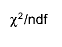
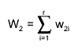

class TH1: public TNamed, public TAttLine, public TAttFill, public TAttMarker
The Histogram classes
- 1-D histograms:
- TH1C : histograms with one byte per channel. Maximum bin content = 127
- TH1S : histograms with one short per channel. Maximum bin content = 32767
- TH1I : histograms with one int per channel. Maximum bin content = 2147483647
- TH1F : histograms with one float per channel. Maximum precision 7 digits
- TH1D : histograms with one double per channel. Maximum precision 14 digits
- 2-D histograms:
- TH2C : histograms with one byte per channel. Maximum bin content = 127
- TH2S : histograms with one short per channel. Maximum bin content = 32767
- TH2I : histograms with one int per channel. Maximum bin content = 2147483647
- TH2F : histograms with one float per channel. Maximum precision 7 digits
- TH2D : histograms with one double per channel. Maximum precision 14 digits
- 3-D histograms:
- TH3C : histograms with one byte per channel. Maximum bin content = 127
- TH3S : histograms with one short per channel. Maximum bin content = 32767
- TH3I : histograms with one int per channel. Maximum bin content = 2147483647
- TH3F : histograms with one float per channel. Maximum precision 7 digits
- TH3D : histograms with one double per channel. Maximum precision 14 digits
- Profile histograms: See classes TProfile, TProfile2D and TProfile3D. Profile histograms are used to display the mean value of Y and its RMS for each bin in X. Profile histograms are in many cases an elegant replacement of two-dimensional histograms : the inter-relation of two measured quantities X and Y can always be visualized by a two-dimensional histogram or scatter-plot; If Y is an unknown (but single-valued) approximate function of X, this function is displayed by a profile histogram with much better precision than by a scatter-plot.
TH1
^
|
|
|
-----------------------------------------------------------
| | | | | | |
| | TH1C TH1S TH1I TH1F TH1D
| | |
| | |
| TH2 TProfile
| |
| |
| ----------------------------------
| | | | | |
| TH2C TH2S TH2I TH2F TH2D
| |
TH3 |
| TProfile2D
|
-------------------------------------
| | | | |
TH3C TH3S TH3I TH3F TH3D
|
|
TProfile3D
The TH*C classes also inherit from the array class TArrayC.
The TH*S classes also inherit from the array class TArrayS.
The TH*I classes also inherit from the array class TArrayI.
The TH*F classes also inherit from the array class TArrayF.
The TH*D classes also inherit from the array class TArrayD.
Creating histograms
Histograms are created by invoking one of the constructors, e.g.
TH1F *h1 = new TH1F("h1", "h1 title", 100, 0, 4.4);
TH2F *h2 = new TH2F("h2", "h2 title", 40, 0, 4, 30, -3, 3);
Histograms may also be created by:
- calling the Clone function, see below
- making a projection from a 2-D or 3-D histogram, see below
- reading an histogram from a file
When an histogram is created, a reference to it is automatically added to the list of in-memory objects for the current file or directory. This default behaviour can be changed by:
h->SetDirectory(0); for the current histogram h
TH1::AddDirectory(kFALSE); sets a global switch disabling the reference
When the histogram is deleted, the reference to it is removed from
the list of objects in memory.
When a file is closed, all histograms in memory associated with this file
are automatically deleted.
Fix or variable bin size
All histogram types support either fix or variable bin sizes. 2-D histograms may have fix size bins along X and variable size bins along Y or vice-versa. The functions to fill, manipulate, draw or access histograms are identical in both cases.Each histogram always contains 3 objects TAxis: fXaxis, fYaxis and fZaxis To access the axis parameters, do:
TAxis *xaxis = h->GetXaxis(); etc.
Double_t binCenter = xaxis->GetBinCenter(bin), etc.
See class TAxis for a description of all the access functions.
The axis range is always stored internally in double precision.
Convention for numbering bins
For all histogram types: nbins, xlow, xup
bin = 0; underflow bin
bin = 1; first bin with low-edge xlow INCLUDED
bin = nbins; last bin with upper-edge xup EXCLUDED
bin = nbins+1; overflow bin
In case of 2-D or 3-D histograms, a "global bin" number is defined. For example, assuming a 3-D histogram with (binx, biny, binz), the function
Int_t gbin = h->GetBin(binx, biny, binz);
returns a global/linearized gbin number. This global gbin is useful
to access the bin content/error information independently of the dimension.
Note that to access the information other than bin content and errors
one should use the TAxis object directly with e.g.:
Double_t xcenter = h3->GetZaxis()->GetBinCenter(27);
returns the center along z of bin number 27 (not the global bin)
in the 3-D histogram h3.
Alphanumeric Bin Labels
By default, an histogram axis is drawn with its numeric bin labels. One can specify alphanumeric labels instead with:- call TAxis::SetBinLabel(bin, label); This can always be done before or after filling. When the histogram is drawn, bin labels will be automatically drawn. See example in $ROOTSYS/tutorials/graphs/labels1.C, labels2.C
- call to a Fill function with one of the arguments being a string, e.g.
hist1->Fill(somename, weigth); hist2->Fill(x, somename, weight); hist2->Fill(somename, y, weight); hist2->Fill(somenamex, somenamey, weight);See example in $ROOTSYS/tutorials/hist/hlabels1.C, hlabels2.C - via TTree::Draw.
see for example $ROOTSYS/tutorials/tree/cernstaff.C
tree.Draw("Nation::Division");where "Nation" and "Division" are two branches of a Tree.
When using the options 2 or 3 above, the labels are automatically added to the list (THashList) of labels for a given axis. By default, an axis is drawn with the order of bins corresponding to the filling sequence. It is possible to reorder the axis
- alphabetically
- by increasing or decreasing values
The reordering can be triggered via the TAxis context menu by selecting the menu item "LabelsOption" or by calling directly TH1::LabelsOption(option, axis) where
- axis may be "X", "Y" or "Z"
- option may be:
- "a" sort by alphabetic order
- ">" sort by decreasing values
- "<" sort by increasing values
- "h" draw labels horizontal
- "v" draw labels vertical
- "u" draw labels up (end of label right adjusted)
- "d" draw labels down (start of label left adjusted)
When using the option 2 above, new labels are added by doubling the current number of bins in case one label does not exist yet. When the Filling is terminated, it is possible to trim the number of bins to match the number of active labels by calling
TH1::LabelsDeflate(axis) with axis = "X", "Y" or "Z"
This operation is automatic when using TTree::Draw.
Once bin labels have been created, they become persistent if the histogram
is written to a file or when generating the C++ code via SavePrimitive.
Histograms with automatic bins
When an histogram is created with an axis lower limit greater or equal to its upper limit, the SetBuffer is automatically called with an argument fBufferSize equal to fgBufferSize (default value=1000). fgBufferSize may be reset via the static function TH1::SetDefaultBufferSize. The axis limits will be automatically computed when the buffer will be full or when the function BufferEmpty is called.Filling histograms
An histogram is typically filled with statements like:
h1->Fill(x);
h1->Fill(x, w); //fill with weight
h2->Fill(x, y)
h2->Fill(x, y, w)
h3->Fill(x, y, z)
h3->Fill(x, y, z, w)
or via one of the Fill functions accepting names described above.
The Fill functions compute the bin number corresponding to the given
x, y or z argument and increment this bin by the given weight.
The Fill functions return the bin number for 1-D histograms or global
bin number for 2-D and 3-D histograms.
If TH1::Sumw2 has been called before filling, the sum of squares of weights is also stored. One can also increment directly a bin number via TH1::AddBinContent or replace the existing content via TH1::SetBinContent. To access the bin content of a given bin, do:
Double_t binContent = h->GetBinContent(bin);
By default, the bin number is computed using the current axis ranges. If the automatic binning option has been set via
h->SetBit(TH1::kCanRebin);
then, the Fill Function will automatically extend the axis range to
accomodate the new value specified in the Fill argument. The method
used is to double the bin size until the new value fits in the range,
merging bins two by two. This automatic binning options is extensively
used by the TTree::Draw function when histogramming Tree variables
with an unknown range.
This automatic binning option is supported for 1-D, 2-D and 3-D histograms. During filling, some statistics parameters are incremented to compute the mean value and Root Mean Square with the maximum precision.
In case of histograms of type TH1C, TH1S, TH2C, TH2S, TH3C, TH3S a check is made that the bin contents do not exceed the maximum positive capacity (127 or 32767). Histograms of all types may have positive or/and negative bin contents.
Rebinning
At any time, an histogram can be rebinned via TH1::Rebin. This function returns a new histogram with the rebinned contents. If bin errors were stored, they are recomputed during the rebinning.Associated errors
By default, for each bin, the sum of weights is computed at fill time. One can also call TH1::Sumw2 to force the storage and computation of the sum of the square of weights per bin. If Sumw2 has been called, the error per bin is computed as the sqrt(sum of squares of weights), otherwise the error is set equal to the sqrt(bin content). To return the error for a given bin number, do:
Double_t error = h->GetBinError(bin);
Associated functions
One or more object (typically a TF1*) can be added to the list of functions (fFunctions) associated to each histogram. When TH1::Fit is invoked, the fitted function is added to this list. Given an histogram h, one can retrieve an associated function with:
TF1 *myfunc = h->GetFunction("myfunc");
Operations on histograms
Many types of operations are supported on histograms or between histograms- Addition of an histogram to the current histogram.
- Additions of two histograms with coefficients and storage into the current histogram.
- Multiplications and Divisions are supported in the same way as additions.
- The Add, Divide and Multiply functions also exist to add, divide or multiply an histogram by a function.
Fitting histograms
Histograms (1-D, 2-D, 3-D and Profiles) can be fitted with a user specified function via TH1::Fit. When an histogram is fitted, the resulting function with its parameters is added to the list of functions of this histogram. If the histogram is made persistent, the list of associated functions is also persistent. Given a pointer (see above) to an associated function myfunc, one can retrieve the function/fit parameters with calls such as:
Double_t chi2 = myfunc->GetChisquare();
Double_t par0 = myfunc->GetParameter(0); value of 1st parameter
Double_t err0 = myfunc->GetParError(0); error on first parameter
Projections of histograms
One can:
- make a 1-D projection of a 2-D histogram or Profile see functions TH2::ProjectionX,Y, TH2::ProfileX,Y, TProfile::ProjectionX
- make a 1-D, 2-D or profile out of a 3-D histogram see functions TH3::ProjectionZ, TH3::Project3D.
One can fit these projections via:
TH2::FitSlicesX,Y, TH3::FitSlicesZ.
Random Numbers and histograms
TH1::FillRandom can be used to randomly fill an histogram using the contents of an existing TF1 function or another TH1 histogram (for all dimensions).For example the following two statements create and fill an histogram 10000 times with a default gaussian distribution of mean 0 and sigma 1:
TH1F h1("h1", "histo from a gaussian", 100, -3, 3);
h1.FillRandom("gaus", 10000);
TH1::GetRandom can be used to return a random number distributed
according the contents of an histogram.
Making a copy of an histogram
Like for any other ROOT object derived from TObject, one can use the Clone() function. This makes an identical copy of the original histogram including all associated errors and functions, e.g.:
TH1F *hnew = (TH1F*)h->Clone("hnew");
Normalizing histograms
One can scale an histogram such that the bins integral is equal to the normalization parameter via TH1::Scale(Double_t norm), where norm is the desired normalization divided by the integral of the histogram.Drawing histograms
Histograms are drawn via the THistPainter class. Each histogram has a pointer to its own painter (to be usable in a multithreaded program). Many drawing options are supported. See THistPainter::Paint() for more details.The same histogram can be drawn with different options in different pads. When an histogram drawn in a pad is deleted, the histogram is automatically removed from the pad or pads where it was drawn. If an histogram is drawn in a pad, then filled again, the new status of the histogram will be automatically shown in the pad next time the pad is updated. One does not need to redraw the histogram. To draw the current version of an histogram in a pad, one can use
h->DrawCopy();
This makes a clone (see Clone below) of the histogram. Once the clone
is drawn, the original histogram may be modified or deleted without
affecting the aspect of the clone.
One can use TH1::SetMaximum() and TH1::SetMinimum() to force a particular value for the maximum or the minimum scale on the plot. (For 1-D histograms this means the y-axis, while for 2-D histograms these functions affect the z-axis).
TH1::UseCurrentStyle() can be used to change all histogram graphics attributes to correspond to the current selected style. This function must be called for each histogram. In case one reads and draws many histograms from a file, one can force the histograms to inherit automatically the current graphics style by calling before gROOT->ForceStyle().
Setting Drawing histogram contour levels (2-D hists only)
By default contours are automatically generated at equidistant intervals. A default value of 20 levels is used. This can be modified via TH1::SetContour() or TH1::SetContourLevel(). the contours level info is used by the drawing options "cont", "surf", and "lego".Setting histogram graphics attributes
The histogram classes inherit from the attribute classes: TAttLine, TAttFill, and TAttMarker. See the member functions of these classes for the list of options.Giving titles to the X, Y and Z axis
h->GetXaxis()->SetTitle("X axis title");
h->GetYaxis()->SetTitle("Y axis title");
The histogram title and the axis titles can be any TLatex string.
The titles are part of the persistent histogram.
It is also possible to specify the histogram title and the axis
titles at creation time. These titles can be given in the "title"
parameter. They must be separated by ";":
TH1F* h=new TH1F("h", "Histogram title;X Axis;Y Axis;Z Axis", 100, 0, 1);
Any title can be omitted:
TH1F* h=new TH1F("h", "Histogram title;;Y Axis", 100, 0, 1);
TH1F* h=new TH1F("h", ";;Y Axis", 100, 0, 1);
The method SetTitle has the same syntax:
h->SetTitle("Histogram title;Another X title Axis");
Saving/Reading histograms to/from a ROOT file
The following statements create a ROOT file and store an histogram on the file. Because TH1 derives from TNamed, the key identifier on the file is the histogram name:
TFile f("histos.root", "new");
TH1F h1("hgaus", "histo from a gaussian", 100, -3, 3);
h1.FillRandom("gaus", 10000);
h1->Write();
To read this histogram in another Root session, do:
TFile f("histos.root");
TH1F *h = (TH1F*)f.Get("hgaus");
One can save all histograms in memory to the file by:
file->Write();
Miscelaneous operations
TH1::KolmogorovTest(): statistical test of compatibility in shape
between two histograms
TH1::Smooth() smooths the bin contents of a 1-d histogram
TH1::Integral() returns the integral of bin contents in a given bin range
TH1::GetMean(int axis) returns the mean value along axis
TH1::GetRMS(int axis) returns the sigma distribution along axis
TH1::GetEntries() returns the number of entries
TH1::Reset() resets the bin contents and errors of an histogram
Function Members (Methods)
| TH1(const TH1&) | |
| virtual | ~TH1() |
| void | TObject::AbstractMethod(const char* method) const |
| virtual void | Add(const TH1* h1, Double_t c1 = 1) |
| virtual void | Add(TF1* h1, Double_t c1 = 1, Option_t* option = "") |
| virtual void | Add(const TH1* h, const TH1* h2, Double_t c1 = 1, Double_t c2 = 1)MENU |
| virtual void | AddBinContent(Int_t bin) |
| virtual void | AddBinContent(Int_t bin, Double_t w) |
| static void | AddDirectory(Bool_t add = kTRUE) |
| static Bool_t | AddDirectoryStatus() |
| virtual void | TObject::AppendPad(Option_t* option = "") |
| virtual void | Browse(TBrowser* b) |
| virtual Int_t | BufferEmpty(Int_t action = 0) |
| virtual Double_t | Chi2Test(const TH1* h2, Option_t* option = "UU", Double_t* res = 0) const |
| virtual Double_t | Chi2TestX(const TH1* h2, Double_t& chi2, Int_t& ndf, Int_t& igood, Option_t* option = "UU", Double_t* res = 0) const |
| static TClass* | Class() |
| virtual const char* | TObject::ClassName() const |
| virtual void | TNamed::Clear(Option_t* option = "") |
| virtual TObject* | TNamed::Clone(const char* newname = "") const |
| virtual Int_t | TNamed::Compare(const TObject* obj) const |
| virtual Double_t | ComputeIntegral() |
| virtual void | TObject::Delete(Option_t* option = "")MENU |
| virtual void | DirectoryAutoAdd(TDirectory*) |
| Int_t | TAttLine::DistancetoLine(Int_t px, Int_t py, Double_t xp1, Double_t yp1, Double_t xp2, Double_t yp2) |
| virtual Int_t | DistancetoPrimitive(Int_t px, Int_t py) |
| virtual void | Divide(const TH1* h1) |
| virtual void | Divide(TF1* f1, Double_t c1 = 1) |
| virtual void | Divide(const TH1* h1, const TH1* h2, Double_t c1 = 1, Double_t c2 = 1, Option_t* option = "")MENU |
| virtual void | Draw(Option_t* option = "") |
| virtual void | TObject::DrawClass() constMENU |
| virtual TObject* | TObject::DrawClone(Option_t* option = "") constMENU |
| virtual TH1* | DrawCopy(Option_t* option = "") const |
| virtual TH1* | DrawNormalized(Option_t* option = "", Double_t norm = 1) const |
| virtual void | DrawPanel()MENU |
| virtual void | TObject::Dump() constMENU |
| virtual void | TObject::Error(const char* method, const char* msgfmt) const |
| virtual void | Eval(TF1* f1, Option_t* option = "") |
| virtual void | TObject::Execute(const char* method, const char* params, Int_t* error = 0) |
| virtual void | TObject::Execute(TMethod* method, TObjArray* params, Int_t* error = 0) |
| virtual void | ExecuteEvent(Int_t event, Int_t px, Int_t py) |
| virtual void | TObject::Fatal(const char* method, const char* msgfmt) const |
| virtual TH1* | FFT(TH1* h_output, Option_t* option) |
| virtual Int_t | Fill(Double_t x) |
| virtual Int_t | Fill(Double_t x, Double_t w) |
| virtual Int_t | Fill(const char* name, Double_t w) |
| virtual void | TNamed::FillBuffer(char*& buffer) |
| virtual void | FillN(Int_t ntimes, const Double_t* x, const Double_t* w, Int_t stride = 1) |
| virtual void | FillN(Int_t, const Double_t*, const Double_t*, const Double_t*, Int_t) |
| virtual void | FillRandom(const char* fname, Int_t ntimes = 5000) |
| virtual void | FillRandom(TH1* h, Int_t ntimes = 5000) |
| virtual Int_t | FindBin(Double_t x, Double_t y = 0, Double_t z = 0) |
| virtual Int_t | FindFirstBinAbove(Double_t threshold = 0, Int_t axis = 1) const |
| virtual Int_t | FindFixBin(Double_t x, Double_t y = 0, Double_t z = 0) const |
| virtual Int_t | FindLastBinAbove(Double_t threshold = 0, Int_t axis = 1) const |
| virtual TObject* | FindObject(const char* name) const |
| virtual TObject* | FindObject(const TObject* obj) const |
| virtual TFitResultPtr | Fit(const char* formula, Option_t* option = "", Option_t* goption = "", Double_t xmin = 0, Double_t xmax = 0)MENU |
| virtual TFitResultPtr | Fit(TF1* f1, Option_t* option = "", Option_t* goption = "", Double_t xmin = 0, Double_t xmax = 0) |
| static Int_t | FitOptionsMake(Option_t* option, Foption_t& Foption) |
| virtual void | FitPanel()MENU |
| TH1* | GetAsymmetry(TH1* h2, Double_t c2 = 1, Double_t dc2 = 0) |
| virtual Color_t | GetAxisColor(Option_t* axis = "X") const |
| virtual Float_t | GetBarOffset() const |
| virtual Float_t | GetBarWidth() const |
| virtual Int_t | GetBin(Int_t binx, Int_t biny = 0, Int_t binz = 0) const |
| virtual Double_t | GetBinCenter(Int_t bin) const |
| virtual Double_t | GetBinContent(Int_t bin) const |
| virtual Double_t | GetBinContent(Int_t binx, Int_t biny) const |
| virtual Double_t | GetBinContent(Int_t binx, Int_t biny, Int_t binz) const |
| virtual Double_t | GetBinError(Int_t bin) const |
| virtual Double_t | GetBinError(Int_t binx, Int_t biny) const |
| virtual Double_t | GetBinError(Int_t binx, Int_t biny, Int_t binz) const |
| virtual Double_t | GetBinLowEdge(Int_t bin) const |
| virtual Double_t | GetBinWidth(Int_t bin) const |
| virtual Double_t | GetBinWithContent(Double_t c, Int_t& binx, Int_t firstx = 0, Int_t lastx = 0, Double_t maxdiff = 0) const |
| virtual void | GetBinXYZ(Int_t binglobal, Int_t& binx, Int_t& biny, Int_t& binz) const |
| const Double_t* | GetBuffer() const |
| Int_t | GetBufferLength() const |
| Int_t | GetBufferSize() const |
| virtual Double_t | GetCellContent(Int_t binx, Int_t biny) const |
| virtual Double_t | GetCellError(Int_t binx, Int_t biny) const |
| virtual void | GetCenter(Double_t* center) const |
| virtual Int_t | GetContour(Double_t* levels = 0) |
| virtual Double_t | GetContourLevel(Int_t level) const |
| virtual Double_t | GetContourLevelPad(Int_t level) const |
| static Int_t | GetDefaultBufferSize() |
| static Bool_t | GetDefaultSumw2() |
| virtual Int_t | GetDimension() const |
| TDirectory* | GetDirectory() const |
| virtual Option_t* | TObject::GetDrawOption() const |
| static Long_t | TObject::GetDtorOnly() |
| virtual Double_t | GetEffectiveEntries() const |
| virtual Double_t | GetEntries() const |
| virtual Color_t | TAttFill::GetFillColor() const |
| virtual Style_t | TAttFill::GetFillStyle() const |
| virtual TF1* | GetFunction(const char* name) const |
| virtual const char* | TObject::GetIconName() const |
| virtual Double_t* | GetIntegral() |
| virtual Double_t | GetKurtosis(Int_t axis = 1) const |
| virtual Color_t | GetLabelColor(Option_t* axis = "X") const |
| virtual Style_t | GetLabelFont(Option_t* axis = "X") const |
| virtual Float_t | GetLabelOffset(Option_t* axis = "X") const |
| virtual Float_t | GetLabelSize(Option_t* axis = "X") const |
| virtual Color_t | TAttLine::GetLineColor() const |
| virtual Style_t | TAttLine::GetLineStyle() const |
| virtual Width_t | TAttLine::GetLineWidth() const |
| TList* | GetListOfFunctions() const |
| virtual void | GetLowEdge(Double_t* edge) const |
| virtual Color_t | TAttMarker::GetMarkerColor() const |
| virtual Size_t | TAttMarker::GetMarkerSize() const |
| virtual Style_t | TAttMarker::GetMarkerStyle() const |
| virtual Double_t | GetMaximum(Double_t maxval = FLT_MAX) const |
| virtual Int_t | GetMaximumBin() const |
| virtual Int_t | GetMaximumBin(Int_t& locmax, Int_t& locmay, Int_t& locmaz) const |
| virtual Double_t | GetMaximumStored() const |
| virtual Double_t | GetMean(Int_t axis = 1) const |
| virtual Double_t | GetMeanError(Int_t axis = 1) const |
| virtual Double_t | GetMinimum(Double_t minval = -FLT_MAX) const |
| virtual Int_t | GetMinimumBin() const |
| virtual Int_t | GetMinimumBin(Int_t& locmix, Int_t& locmiy, Int_t& locmiz) const |
| virtual Double_t | GetMinimumStored() const |
| virtual const char* | TNamed::GetName() const |
| virtual Int_t | GetNbinsX() const |
| virtual Int_t | GetNbinsY() const |
| virtual Int_t | GetNbinsZ() const |
| virtual Int_t | GetNdivisions(Option_t* axis = "X") const |
| virtual Double_t | GetNormFactor() const |
| virtual char* | GetObjectInfo(Int_t px, Int_t py) const |
| static Bool_t | TObject::GetObjectStat() |
| virtual Option_t* | GetOption() const |
| TVirtualHistPainter* | GetPainter(Option_t* option = "") |
| virtual Int_t | GetQuantiles(Int_t nprobSum, Double_t* q, const Double_t* probSum = 0) |
| virtual Double_t | GetRandom() const |
| virtual Double_t | GetRMS(Int_t axis = 1) const |
| virtual Double_t | GetRMSError(Int_t axis = 1) const |
| virtual Double_t | GetSkewness(Int_t axis = 1) const |
| virtual void | GetStats(Double_t* stats) const |
| virtual Double_t | GetSumOfWeights() const |
| virtual TArrayD* | GetSumw2() |
| virtual const TArrayD* | GetSumw2() const |
| virtual Int_t | GetSumw2N() const |
| virtual Float_t | GetTickLength(Option_t* axis = "X") const |
| virtual const char* | TNamed::GetTitle() const |
| virtual Style_t | GetTitleFont(Option_t* axis = "X") const |
| virtual Float_t | GetTitleOffset(Option_t* axis = "X") const |
| virtual Float_t | GetTitleSize(Option_t* axis = "X") const |
| virtual UInt_t | TObject::GetUniqueID() const |
| TAxis* | GetXaxis() const |
| TAxis* | GetYaxis() const |
| TAxis* | GetZaxis() const |
| virtual Bool_t | TObject::HandleTimer(TTimer* timer) |
| virtual ULong_t | TNamed::Hash() const |
| virtual void | TObject::Info(const char* method, const char* msgfmt) const |
| virtual Bool_t | TObject::InheritsFrom(const char* classname) const |
| virtual Bool_t | TObject::InheritsFrom(const TClass* cl) const |
| virtual void | TObject::Inspect() constMENU |
| virtual Double_t | Integral(Option_t* option = "") const |
| virtual Double_t | Integral(Int_t binx1, Int_t binx2, Option_t* option = "") const |
| virtual Double_t | IntegralAndError(Int_t binx1, Int_t binx2, Double_t& err, Option_t* option = "") const |
| virtual Double_t | Interpolate(Double_t x) |
| virtual Double_t | Interpolate(Double_t x, Double_t y) |
| virtual Double_t | Interpolate(Double_t x, Double_t y, Double_t z) |
| void | TObject::InvertBit(UInt_t f) |
| virtual TClass* | IsA() const |
| Bool_t | IsBinOverflow(Int_t bin) const |
| Bool_t | IsBinUnderflow(Int_t bin) const |
| virtual Bool_t | TObject::IsEqual(const TObject* obj) const |
| virtual Bool_t | TObject::IsFolder() const |
| Bool_t | TObject::IsOnHeap() const |
| virtual Bool_t | TNamed::IsSortable() const |
| virtual Bool_t | TAttFill::IsTransparent() const |
| Bool_t | TObject::IsZombie() const |
| virtual Double_t | KolmogorovTest(const TH1* h2, Option_t* option = "") const |
| virtual void | LabelsDeflate(Option_t* axis = "X") |
| virtual void | LabelsInflate(Option_t* axis = "X") |
| virtual void | LabelsOption(Option_t* option = "h", Option_t* axis = "X") |
| virtual void | TNamed::ls(Option_t* option = "") const |
| void | TObject::MayNotUse(const char* method) const |
| virtual Long64_t | Merge(TCollection* list) |
| virtual void | TAttLine::Modify() |
| virtual void | Multiply(const TH1* h1) |
| virtual void | Multiply(TF1* h1, Double_t c1 = 1) |
| virtual void | Multiply(const TH1* h1, const TH1* h2, Double_t c1 = 1, Double_t c2 = 1, Option_t* option = "")MENU |
| virtual Bool_t | TObject::Notify() |
| void | TObject::Obsolete(const char* method, const char* asOfVers, const char* removedFromVers) const |
| static void | TObject::operator delete(void* ptr) |
| static void | TObject::operator delete(void* ptr, void* vp) |
| static void | TObject::operator delete[](void* ptr) |
| static void | TObject::operator delete[](void* ptr, void* vp) |
| void* | TObject::operator new(size_t sz) |
| void* | TObject::operator new(size_t sz, void* vp) |
| void* | TObject::operator new[](size_t sz) |
| void* | TObject::operator new[](size_t sz, void* vp) |
| virtual void | Paint(Option_t* option = "") |
| virtual void | TObject::Pop() |
| virtual void | Print(Option_t* option = "") const |
| virtual void | PutStats(Double_t* stats) |
| virtual Int_t | TObject::Read(const char* name) |
| virtual TH1* | Rebin(Int_t ngroup = 2, const char* newname = "", const Double_t* xbins = 0)MENU |
| virtual void | RebinAxis(Double_t x, TAxis* axis) |
| virtual void | Rebuild(Option_t* option = "") |
| virtual void | RecursiveRemove(TObject* obj) |
| virtual void | Reset(Option_t* option = "") |
| virtual void | TAttFill::ResetAttFill(Option_t* option = "") |
| virtual void | TAttLine::ResetAttLine(Option_t* option = "") |
| virtual void | TAttMarker::ResetAttMarker(Option_t* toption = "") |
| void | TObject::ResetBit(UInt_t f) |
| virtual void | ResetStats() |
| virtual void | TObject::SaveAs(const char* filename = "", Option_t* option = "") constMENU |
| virtual void | TAttFill::SaveFillAttributes(ostream& out, const char* name, Int_t coldef = 1, Int_t stydef = 1001) |
| virtual void | TAttLine::SaveLineAttributes(ostream& out, const char* name, Int_t coldef = 1, Int_t stydef = 1, Int_t widdef = 1) |
| virtual void | TAttMarker::SaveMarkerAttributes(ostream& out, const char* name, Int_t coldef = 1, Int_t stydef = 1, Int_t sizdef = 1) |
| virtual void | SavePrimitive(ostream& out, Option_t* option = "") |
| virtual void | Scale(Double_t c1 = 1, Option_t* option = "") |
| virtual void | SetAxisColor(Color_t color = 1, Option_t* axis = "X") |
| virtual void | SetAxisRange(Double_t xmin, Double_t xmax, Option_t* axis = "X") |
| virtual void | SetBarOffset(Float_t offset = 0.25) |
| virtual void | SetBarWidth(Float_t width = 0.5) |
| virtual void | SetBinContent(Int_t bin, Double_t content) |
| virtual void | SetBinContent(Int_t binx, Int_t biny, Double_t content) |
| virtual void | SetBinContent(Int_t binx, Int_t biny, Int_t binz, Double_t content) |
| virtual void | SetBinError(Int_t bin, Double_t error) |
| virtual void | SetBinError(Int_t binx, Int_t biny, Double_t error) |
| virtual void | SetBinError(Int_t binx, Int_t biny, Int_t binz, Double_t error) |
| virtual void | SetBins(Int_t nx, const Double_t* xBins) |
| virtual void | SetBins(Int_t nx, Double_t xmin, Double_t xmax) |
| virtual void | SetBins(Int_t nx, const Double_t* xBins, Int_t ny, const Double_t* yBins) |
| virtual void | SetBins(Int_t nx, Double_t xmin, Double_t xmax, Int_t ny, Double_t ymin, Double_t ymax) |
| virtual void | SetBins(Int_t nx, const Double_t* xBins, Int_t ny, const Double_t* yBins, Int_t nz, const Double_t* zBins) |
| virtual void | SetBins(Int_t nx, Double_t xmin, Double_t xmax, Int_t ny, Double_t ymin, Double_t ymax, Int_t nz, Double_t zmin, Double_t zmax) |
| virtual void | SetBinsLength(Int_t = -1) |
| void | TObject::SetBit(UInt_t f) |
| void | TObject::SetBit(UInt_t f, Bool_t set) |
| virtual void | SetBuffer(Int_t buffersize, Option_t* option = "") |
| virtual void | SetCellContent(Int_t binx, Int_t biny, Double_t content) |
| virtual void | SetCellError(Int_t binx, Int_t biny, Double_t content) |
| virtual void | SetContent(const Double_t* content) |
| virtual void | SetContour(Int_t nlevels, const Double_t* levels = 0) |
| virtual void | SetContourLevel(Int_t level, Double_t value) |
| static void | SetDefaultBufferSize(Int_t buffersize = 1000) |
| static void | SetDefaultSumw2(Bool_t sumw2 = kTRUE) |
| virtual void | SetDirectory(TDirectory* dir) |
| virtual void | TObject::SetDrawOption(Option_t* option = "")MENU |
| static void | TObject::SetDtorOnly(void* obj) |
| virtual void | SetEntries(Double_t n) |
| virtual void | SetError(const Double_t* error) |
| virtual void | TAttFill::SetFillAttributes()MENU |
| virtual void | TAttFill::SetFillColor(Color_t fcolor) |
| virtual void | TAttFill::SetFillStyle(Style_t fstyle) |
| virtual void | SetLabelColor(Color_t color = 1, Option_t* axis = "X") |
| virtual void | SetLabelFont(Style_t font = 62, Option_t* axis = "X") |
| virtual void | SetLabelOffset(Float_t offset = 0.005, Option_t* axis = "X") |
| virtual void | SetLabelSize(Float_t size = 0.02, Option_t* axis = "X") |
| virtual void | TAttLine::SetLineAttributes()MENU |
| virtual void | TAttLine::SetLineColor(Color_t lcolor) |
| virtual void | TAttLine::SetLineStyle(Style_t lstyle) |
| virtual void | TAttLine::SetLineWidth(Width_t lwidth) |
| virtual void | TAttMarker::SetMarkerAttributes()MENU |
| virtual void | TAttMarker::SetMarkerColor(Color_t tcolor = 1) |
| virtual void | TAttMarker::SetMarkerSize(Size_t msize = 1) |
| virtual void | TAttMarker::SetMarkerStyle(Style_t mstyle = 1) |
| virtual void | SetMaximum(Double_t maximum = -1111)MENU |
| virtual void | SetMinimum(Double_t minimum = -1111)MENU |
| virtual void | SetName(const char* name)MENU |
| virtual void | SetNameTitle(const char* name, const char* title) |
| virtual void | SetNdivisions(Int_t n = 510, Option_t* axis = "X") |
| virtual void | SetNormFactor(Double_t factor = 1) |
| static void | TObject::SetObjectStat(Bool_t stat) |
| virtual void | SetOption(Option_t* option = " ") |
| virtual void | SetStats(Bool_t stats = kTRUE)MENU |
| virtual void | SetTickLength(Float_t length = 0.02, Option_t* axis = "X") |
| virtual void | SetTitle(const char* title)MENU |
| virtual void | SetTitleFont(Style_t font = 62, Option_t* axis = "X") |
| virtual void | SetTitleOffset(Float_t offset = 1, Option_t* axis = "X") |
| virtual void | SetTitleSize(Float_t size = 0.02, Option_t* axis = "X") |
| virtual void | TObject::SetUniqueID(UInt_t uid) |
| virtual void | SetXTitle(const char* title) |
| virtual void | SetYTitle(const char* title) |
| virtual void | SetZTitle(const char* title) |
| virtual TH1* | ShowBackground(Int_t niter = 20, Option_t* option = "same")MENU |
| virtual void | ShowMembers(TMemberInspector& insp) |
| virtual Int_t | ShowPeaks(Double_t sigma = 2, Option_t* option = "", Double_t threshold = 0.05)MENU |
| virtual Int_t | TNamed::Sizeof() const |
| virtual void | Smooth(Int_t ntimes = 1, Option_t* option = "")MENU |
| static void | SmoothArray(Int_t NN, Double_t* XX, Int_t ntimes = 1) |
| static void | StatOverflows(Bool_t flag = kTRUE) |
| virtual void | Streamer(TBuffer& b) |
| void | StreamerNVirtual(TBuffer& b) |
| virtual void | Sumw2() |
| virtual void | TObject::SysError(const char* method, const char* msgfmt) const |
| Bool_t | TObject::TestBit(UInt_t f) const |
| Int_t | TObject::TestBits(UInt_t f) const |
| static TH1* | TransformHisto(TVirtualFFT* fft, TH1* h_output, Option_t* option) |
| virtual void | UseCurrentStyle() |
| virtual void | TObject::Warning(const char* method, const char* msgfmt) const |
| virtual Int_t | TObject::Write(const char* name = 0, Int_t option = 0, Int_t bufsize = 0) |
| virtual Int_t | TObject::Write(const char* name = 0, Int_t option = 0, Int_t bufsize = 0) const |
| TH1() | |
| TH1(const char* name, const char* title, Int_t nbinsx, const Float_t* xbins) | |
| TH1(const char* name, const char* title, Int_t nbinsx, const Double_t* xbins) | |
| TH1(const char* name, const char* title, Int_t nbinsx, Double_t xlow, Double_t xup) | |
| virtual Int_t | BufferFill(Double_t x, Double_t w) |
| static bool | CheckAxisLimits(const TAxis* a1, const TAxis* a2) |
| static bool | CheckBinLimits(const TAxis* a1, const TAxis* a2) |
| static bool | CheckConsistency(const TH1* h1, const TH1* h2) |
| static bool | CheckConsistentSubAxes(const TAxis* a1, Int_t firstBin1, Int_t lastBin1, const TAxis* a2, Int_t firstBin2 = 0, Int_t lastBin2 = 0) |
| static bool | CheckEqualAxes(const TAxis* a1, const TAxis* a2) |
| virtual void | Copy(TObject& hnew) const |
| virtual void | TObject::DoError(int level, const char* location, const char* fmt, va_list va) const |
| virtual Double_t | DoIntegral(Int_t ix1, Int_t ix2, Int_t iy1, Int_t iy2, Int_t iz1, Int_t iz2, Double_t& err, Option_t* opt, Bool_t doerr = kFALSE) const |
| virtual Bool_t | FindNewAxisLimits(const TAxis* axis, const Double_t point, Double_t& newMin, Double_t& newMax) |
| void | TObject::MakeZombie() |
| static Bool_t | RecomputeAxisLimits(TAxis& destAxis, const TAxis& anAxis) |
| static Bool_t | SameLimitsAndNBins(const TAxis& axis1, const TAxis& axis2) |
| virtual void | SavePrimitiveHelp(ostream& out, const char* hname, Option_t* option = "") |
Data Members
| enum { | kNoStats | |
| kUserContour | ||
| kCanRebin | ||
| kLogX | ||
| kIsZoomed | ||
| kNoTitle | ||
| kIsAverage | ||
| kNstat | ||
| }; | ||
| enum TObject::EStatusBits { | kCanDelete | |
| kMustCleanup | ||
| kObjInCanvas | ||
| kIsReferenced | ||
| kHasUUID | ||
| kCannotPick | ||
| kNoContextMenu | ||
| kInvalidObject | ||
| }; | ||
| enum TObject::[unnamed] { | kIsOnHeap | |
| kNotDeleted | ||
| kZombie | ||
| kBitMask | ||
| kSingleKey | ||
| kOverwrite | ||
| kWriteDelete | ||
| }; |
| Short_t | fBarOffset | (1000*offset) for bar charts or legos |
| Short_t | fBarWidth | (1000*width) for bar charts or legos |
| Double_t* | fBuffer | [fBufferSize] entry buffer |
| Int_t | fBufferSize | fBuffer size |
| TArrayD | fContour | Array to display contour levels |
| Int_t | fDimension | !Histogram dimension (1, 2 or 3 dim) |
| TDirectory* | fDirectory | !Pointer to directory holding this histogram |
| Double_t | fEntries | Number of entries |
| Color_t | TAttFill::fFillColor | fill area color |
| Style_t | TAttFill::fFillStyle | fill area style |
| TList* | fFunctions | ->Pointer to list of functions (fits and user) |
| Double_t* | fIntegral | !Integral of bins used by GetRandom |
| Color_t | TAttLine::fLineColor | line color |
| Style_t | TAttLine::fLineStyle | line style |
| Width_t | TAttLine::fLineWidth | line width |
| Color_t | TAttMarker::fMarkerColor | Marker color index |
| Size_t | TAttMarker::fMarkerSize | Marker size |
| Style_t | TAttMarker::fMarkerStyle | Marker style |
| Double_t | fMaximum | Maximum value for plotting |
| Double_t | fMinimum | Minimum value for plotting |
| TString | TNamed::fName | object identifier |
| Int_t | fNcells | number of bins(1D), cells (2D) +U/Overflows |
| Double_t | fNormFactor | Normalization factor |
| TString | fOption | histogram options |
| TVirtualHistPainter* | fPainter | !pointer to histogram painter |
| TArrayD | fSumw2 | Array of sum of squares of weights |
| TString | TNamed::fTitle | object title |
| Double_t | fTsumw | Total Sum of weights |
| Double_t | fTsumw2 | Total Sum of squares of weights |
| Double_t | fTsumwx | Total Sum of weight*X |
| Double_t | fTsumwx2 | Total Sum of weight*X*X |
| TAxis | fXaxis | X axis descriptor |
| TAxis | fYaxis | Y axis descriptor |
| TAxis | fZaxis | Z axis descriptor |
| static Bool_t | fgAddDirectory | !flag to add histograms to the directory |
| static Int_t | fgBufferSize | !default buffer size for automatic histograms |
| static Bool_t | fgDefaultSumw2 | !flag to call TH1::Sumw2 automatically at histogram creation time |
| static Bool_t | fgStatOverflows | !flag to use under/overflows in statistics |
Class Charts
{kind=link}
{kind=link}
{kind=link}

Function documentation
-*-*-*-*-*-*-*Normal constructor for fix bin size histograms*-*-*-*-*-*-*
Creates the main histogram structure:
name : name of histogram (avoid blanks)
title : histogram title
if title is of the form "stringt;stringx;stringy;stringz"
the histogram title is set to stringt,
the x axis title to stringy, the y axis title to stringy, etc.
nbins : number of bins
xlow : low edge of first bin
xup : upper edge of last bin (not included in last bin)
When an histogram is created, it is automatically added to the list
of special objects in the current directory.
To find the pointer to this histogram in the current directory
by its name, do:
TH1F *h1 = (TH1F*)gDirectory->FindObject(name);
-*-*-*-*-*-*-*-*-*-*-*-*-*-*-*-*-*-*-*-*-*-*-*-*-*-*-*-*-*-*-*-*-*-*-*-*
-*-*-*-*-*Normal constructor for variable bin size histograms*-*-*-*-*-*-*
Creates the main histogram structure:
name : name of histogram (avoid blanks)
title : histogram title
if title is of the form "stringt;stringx;stringy;stringz"
the histogram title is set to stringt,
the x axis title to stringx, the y axis title to stringy, etc.
nbins : number of bins
xbins : array of low-edges for each bin
This is an array of size nbins+1
-*-*-*-*-*-*-*-*-*-*-*-*-*-*-*-*-*-*-*-*-*-*-*-*-*-*-*-*-*-*-*-*-*-*-*-*
-*-*-*-*-*Normal constructor for variable bin size histograms*-*-*-*-*-*-*
Creates the main histogram structure:
name : name of histogram (avoid blanks)
title : histogram title
if title is of the form "stringt;stringx;stringy;stringz"
the histogram title is set to stringt,
the x axis title to stringx, the y axis title to stringy, etc.
nbins : number of bins
xbins : array of low-edges for each bin
This is an array of size nbins+1
-*-*-*-*-*-*-*-*-*-*-*-*-*-*-*-*-*-*-*-*-*-*-*-*-*-*-*-*-*-*-*-*-*-*-*-*
Performs the operation: this = this + c1*f1 if errors are defined (see TH1::Sumw2), errors are also recalculated. By default, the function is computed at the centre of the bin. if option "I" is specified (1-d histogram only), the integral of the function in each bin is used instead of the value of the function at the centre of the bin. Only bins inside the function range are recomputed. IMPORTANT NOTE: If you intend to use the errors of this histogram later you should call Sumw2 before making this operation. This is particularly important if you fit the histogram after TH1::Add
Performs the operation: this = this + c1*h1 if errors are defined (see TH1::Sumw2), errors are also recalculated. Note that if h1 has Sumw2 set, Sumw2 is automatically called for this if not already set. SPECIAL CASE (Average/Efficiency histograms) For histograms representing averages or efficiencies, one should compute the average of the two histograms and not the sum. One can mark a histogram to be an average histogram by setting its bit kIsAverage with myhist.SetBit(TH1::kIsAverage); Note that the two histograms must have their kIsAverage bit set IMPORTANT NOTE1: If you intend to use the errors of this histogram later you should call Sumw2 before making this operation. This is particularly important if you fit the histogram after TH1::Add IMPORTANT NOTE2: if h1 has a normalisation factor, the normalisation factor is used , ie this = this + c1*factor*h1 Use the other TH1::Add function if you do not want this feature
-*-*-*Replace contents of this histogram by the addition of h1 and h2*-*-* this = c1*h1 + c2*h2 if errors are defined (see TH1::Sumw2), errors are also recalculated Note that if h1 or h2 have Sumw2 set, Sumw2 is automatically called for this if not already set. SPECIAL CASE (Average/Efficiency histograms) For histograms representing averages or efficiencies, one should compute the average of the two histograms and not the sum. One can mark a histogram to be an average histogram by setting its bit kIsAverage with myhist.SetBit(TH1::kIsAverage); Note that the two histograms must have their kIsAverage bit set IMPORTANT NOTE: If you intend to use the errors of this histogram later you should call Sumw2 before making this operation. This is particularly important if you fit the histogram after TH1::Add ANOTHER SPECIAL CASE : h1 = h2 and c2 < 0 do a scaling this = c1 * h1 / (bin Volume)
-*-*-*-*-*-*-*-*Increment bin content by a weight w*-*-*-*-*-*-*-*-*-*-*
Sets the flag controlling the automatic add of histograms in memory By default (fAddDirectory = kTRUE), histograms are automatically added to the list of objects in memory. Note that one histogram can be removed from its support directory by calling h->SetDirectory(0) or h->SetDirectory(dir) to add it to the list of objects in the directory dir. NOTE that this is a static function. To call it, use; TH1::AddDirectory
Fill histogram with all entries in the buffer. action = -1 histogram is reset and refilled from the buffer (called by THistPainter::Paint) action = 0 histogram is reset and filled from the buffer. When the histogram is filled from the buffer the value fBuffer[0] is set to a negative number (= - number of entries) When calling with action == 0 the histogram is NOT refilled when fBuffer[0] is < 0 While when calling with action = -1 the histogram is reset and ALWAYS refilled independently if the histogram was filled before. This is needed when drawing the histogram action = 1 histogram is filled and buffer is deleted The buffer is automatically deleted when filling the histogram and the entries is larger than the buffer size
Check that the axis limits of the histograms are the same if a first and last bin is passed the axis is compared between the given range
Check that two sub axis are the same the limits are defined by first bin and last bin N.B. no check is done in this case for variable bins
Check histogram compatibility returns kTRUE if number of bins and bin limits are identical
test for comparing weighted and unweighted histograms Function: Returns p-value. Other return values are specified by the 3rd parameter <br> Parameters: - h2: the second histogram - option: o "UU" = experiment experiment comparison (unweighted-unweighted) o "UW" = experiment MC comparison (unweighted-weighted). Note that the first histogram should be unweighted o "WW" = MC MC comparison (weighted-weighted) o "NORM" = to be used when one or both of the histograms is scaled but the histogram originally was unweighted o by default underflows and overlows are not included: * "OF" = overflows included * "UF" = underflows included o "P" = print chi2, ndf, p_value, igood o "CHI2" = returns chi2 instead of p-value o "CHI2/NDF" = returns  - res: not empty - computes normalized residuals and returns them in this array The current implementation is based on the papers
test for comparison of weighted and unweighted histograms" in Proceedings of PHYSTAT05 and "Comparison weighted and unweighted histograms", arXiv:physics/0605123 by N.Gagunashvili. This function has been implemented by Daniel Haertl in August 2006. Introduction: A frequently used technique in data analysis is the comparison of histograms. First suggested by Pearson [1] the
test of homogeneity is used widely for comparing usual (unweighted) histograms. This paper describes the implementation modified tests for comparison of weighted and unweighted histograms and two weighted histograms [2] as well as usual Pearson's
test for comparison two usual (unweighted) histograms. Overview: Comparison of two histograms expect hypotheses that two histograms represent identical distributions. To make a decision p-value should be calculated. The hypotheses of identity is rejected if the p-value is lower then some significance level. Traditionally significance levels 0.1, 0.05 and 0.01 are used. The comparison procedure should include an analysis of the residuals which is often helpful in identifying the bins of histograms responsible for a significant overall
value. Residuals are the difference between bin contents and expected bin contents. Most convenient for analysis are the normalized residuals. If hypotheses of identity are valid then normalized residuals are approximately independent and identically distributed random variables having N(0,1) distribution. Analysis of residuals expect test of above mentioned properties of residuals. Notice that indirectly the analysis of residuals increase the power of
test. Methods of comparison:
test for comparison two (unweighted) histograms: Let us consider two histograms with the same binning and the number of bins equal to r. Let us denote the number of events in the ith bin in the first histogram as ni and as mi in the second one. The total number of events in the first histogram is equal to: and in the second histogram. The hypothesis of identity (homogeneity) [3] is that the two histograms represent random values with identical distributions. It is equivalent that there exist r constants p1,...,pr, such that and the probability of belonging to the ith bin for some measured value in both experiments is equal to pi. The number of events in the ith bin is a random variable with a distribution approximated by a Poisson probability distribution for the first histogram and with distribution
for the second histogram. If the hypothesis of homogeneity is valid, then the maximum likelihood estimator of pi, i=1,...,r, is
and then has approximately a
distribution [3]. The comparison procedure can include an analysis of the residuals which is often helpful in identifying the bins of histograms responsible for a significant overall
value. Most convenient for analysis are the adjusted (normalized) residuals [4] If hypotheses of homogeneity are valid then residuals ri are approximately independent and identically distributed random variables having N(0,1) distribution. The application of the
test has restrictions related to the value of the expected frequencies Npi, Mpi, i=1,...,r. A conservative rule formulated in [5] is that all the expectations must be 1 or greater for both histograms. In practical cases when expected frequencies are not known the estimated expected frequencies can be used. Unweighted and weighted histograms comparison: A simple modification of the ideas described above can be used for the comparison of the usual (unweighted) and weighted histograms. Let us denote the number of events in the ith bin in the unweighted histogram as ni and the common weight of events in the ith bin of the weighted histogram as wi. The total number of events in the unweighted histogram is equal to
and the total weight of events in the weighted histogram is equal to Let us formulate the hypothesis of identity of an unweighted histogram to a weighted histogram so that there exist r constants p1,...,pr, such that for the unweighted histogram. The weight wi is a random variable with a distribution approximated by the normal probability distribution
where
is the variance of the weight wi. If we replace the variance with estimate (sum of squares of weights of events in the ith bin) and the hypothesis of identity is valid, then the maximum likelihood estimator of pi,i=1,...,r, is We may then use the test statistic and it has approximately a
distribution [2]. This test, as well as the original one [3], has a restriction on the expected frequencies. The expected frequencies recommended for the weighted histogram is more than 25. The value of the minimal expected frequency can be decreased down to 10 for the case when the weights of the events are close to constant. In the case of a weighted histogram if the number of events is unknown, then we can apply this recommendation for the equivalent number of events as The minimal expected frequency for an unweighted histogram must be 1. Notice that any usual (unweighted) histogram can be considered as a weighted histogram with events that have constant weights equal to 1. The variance of the difference between the weight wi and the estimated expectation value of the weight is approximately equal to: The residuals have approximately a normal distribution with mean equal to 0 and standard deviation equal to 1. Two weighted histograms comparison: Let us denote the common weight of events of the ith bin in the first histogram as w1i and as w2i in the second one. The total weight of events in the first histogram is equal to and  in the second histogram. Let us formulate the hypothesis of identity of weighted histograms so that there exist r constants p1,...,pr, such that
and also expectation value of weight w1i equal to W1pi and expectation value of weight w2i equal to W2pi. Weights in both the histograms are random variables with distributions which can be approximated by a normal probability distribution
for the first histogram and by a distribution for the second. Here and are the variances of w1i and w2i with estimators and respectively. If the hypothesis of identity is valid, then the maximum likelihood and Least Square Method estimator of pi,i=1,...,r, is We may then use the test statistic
and it has approximately a distribution [2]. The normalized or studentised residuals [6] have approximately a normal distribution with mean equal to 0 and standard deviation 1. A recommended minimal expected frequency is equal to 10 for the proposed test. Numerical examples: The method described herein is now illustrated with an example. We take a distribution defined on the interval [4,16]. Events distributed according to the formula (1) are simulated to create the unweighted histogram. Uniformly distributed events are simulated for the weighted histogram with weights calculated by formula (1). Each histogram has the same number of bins: 20. Fig.1 shows the result of comparison of the unweighted histogram with 200 events (minimal expected frequency equal to one) and the weighted histogram with 500 events (minimal expected frequency equal to 25)
Fig 1. An example of comparison of the unweighted histogram with 200 events and the weighted histogram with 500 events: a) unweighted histogram; b) weighted histogram; c) normalized residuals plot; d) normal Q-Q plot of residuals. The value of the test statistic
is equal to 21.09 with p-value equal to 0.33, therefore the hypothesis of identity of the two histograms can be accepted for 0.05 significant level. The behavior of the normalized residuals plot (see Fig. 1c) and the normal Q-Q plot (see Fig. 1d) of residuals are regular and we cannot identify the outliers or bins with a big influence on
. The second example presents the same two histograms but 17 events was added to content of bin number 15 in unweighted histogram. Fig.2 shows the result of comparison of the unweighted histogram with 217 events (minimal expected frequency equal to one) and the weighted histogram with 500 events (minimal expected frequency equal to 25) Fig 2. An example of comparison of the unweighted histogram with 217 events and the weighted histogram with 500 events: a) unweighted histogram; b) weighted histogram; c) normalized residuals plot; d) normal Q-Q plot of residuals. The value of the test statistic
is equal to 32.33 with p-value equal to 0.029, therefore the hypothesis of identity of the two histograms is rejected for 0.05 significant level. The behavior of the normalized residuals plot (see Fig. 2c) and the normal Q-Q plot (see Fig. 2d) of residuals are not regular and we can identify the outlier or bin with a big influence on
. References: [1] Pearson, K., 1904. On the Theory of Contingency and Its Relation to Association and Normal Correlation. Drapers' Co. Memoirs, Biometric Series No. 1, London. [2] Gagunashvili, N., 2006.
test for comparison of weighted and unweighted histograms. Statistical Problems in Particle Physics, Astrophysics and Cosmology, Proceedings of PHYSTAT05, Oxford, UK, 12-15 September 2005, Imperial College Press, London, 43-44. Gagunashvili,N., Comparison of weighted and unweighted histograms, arXiv:physics/0605123, 2006. [3] Cramer, H., 1946. Mathematical methods of statistics. Princeton University Press, Princeton. [4] Haberman, S.J., 1973. The analysis of residuals in cross-classified tables. Biometrics 29, 205-220. [5] Lewontin, R.C. and Felsenstein, J., 1965. The robustness of homogeneity test in 2xN tables. Biometrics 21, 19-33. [6] Seber, G.A.F., Lee, A.J., 2003, Linear Regression Analysis. John Wiley & Sons Inc., New York.
The computation routine of the Chisquare test. For the method description, see Chi2Test() function. Returns p-value parameters: - h2-second histogram - option: "UU" = experiment experiment comparison (unweighted-unweighted) "UW" = experiment MC comparison (unweighted-weighted). Note that the first histogram should be unweighted "WW" = MC MC comparison (weighted-weighted) "NORM" = if one or both histograms is scaled "OF" = overflows included "UF" = underflows included by default underflows and overflows are not included - igood: igood=0 - no problems For unweighted unweighted comparison igood=1'There is a bin in the 1st histogram with less than 1 event' igood=2'There is a bin in the 2nd histogram with less than 1 event' igood=3'when the conditions for igood=1 and igood=2 are satisfied' For unweighted weighted comparison igood=1'There is a bin in the 1st histogram with less then 1 event' igood=2'There is a bin in the 2nd histogram with less then 10 effective number of events' igood=3'when the conditions for igood=1 and igood=2 are satisfied' For weighted weighted comparison igood=1'There is a bin in the 1st histogram with less then 10 effective number of events' igood=2'There is a bin in the 2nd histogram with less then 10 effective number of events' igood=3'when the conditions for igood=1 and igood=2 are satisfied' - chi2 - chisquare of the test - ndf - number of degrees of freedom (important, when both histograms have the same empty bins) - res - normalized residuals for further analysis
Compute integral (cumulative sum of bins) The result stored in fIntegral is used by the GetRandom functions. This function is automatically called by GetRandom when the fIntegral array does not exist or when the number of entries in the histogram has changed since the previous call to GetRandom. The resulting integral is normalized to 1
Return a pointer to the array of bins integral. if the pointer fIntegral is null, TH1::ComputeIntegral is called The array dimension is the number of bins in the histograms including underflow and overflow (fNCells) the last value integral[fNCells] is set to the number of entries of the histogram
Perform the automatic addition of the histogram to the given directory Note this function is called in place when the semantic requires this object to be added to a directory (I.e. when being read from a TKey or being Cloned)
-*-*-*-*-*-*-*-*-*Compute distance from point px,py to a line*-*-*-*-*-*
Compute the closest distance of approach from point px,py to elements
of an histogram.
The distance is computed in pixels units.
Algorithm:
Currently, this simple model computes the distance from the mouse
to the histogram contour only.
-*-*-*-*-*-*-*-*-*-*-*-*-*-*-*-*-*-*-*-*-*-*-*-*-*-*-*-*-*-*-*-*-*-*-*
Performs the operation: this = this/(c1*f1) if errors are defined (see TH1::Sumw2), errors are also recalculated. Only bins inside the function range are recomputed. IMPORTANT NOTE: If you intend to use the errors of this histogram later you should call Sumw2 before making this operation. This is particularly important if you fit the histogram after TH1::Divide
-*-*-*-*-*-*-*-*-*Divide this histogram by h1*-*-*-*-*-*-*-*-*-*-*-*-* this = this/h1 if errors are defined (see TH1::Sumw2), errors are also recalculated. Note that if h1 has Sumw2 set, Sumw2 is automatically called for this if not already set. The resulting errors are calculated assuming uncorrelated histograms. See the other TH1::Divide that gives the possibility to optionally compute binomial errors. IMPORTANT NOTE: If you intend to use the errors of this histogram later you should call Sumw2 before making this operation. This is particularly important if you fit the histogram after TH1::Scale
-*-*-*Replace contents of this histogram by the division of h1 by h2*-*-* this = c1*h1/(c2*h2) if errors are defined (see TH1::Sumw2), errors are also recalculated Note that if h1 or h2 have Sumw2 set, Sumw2 is automatically called for this if not already set. The resulting errors are calculated assuming uncorrelated histograms. However, if option ="B" is specified, Binomial errors are computed. In this case c1 and c2 do not make real sense and they are ignored. IMPORTANT NOTE: If you intend to use the errors of this histogram later you should call Sumw2 before making this operation. This is particularly important if you fit the histogram after TH1::Divide Please note also that in the binomial case errors are calculated using standard binomial statistics, which means when b1 = b2, the error is zero. If you prefer to have efficiency errors not going to zero when the efficiency is 1, you must use the function TGraphAsymmErrors::BayesDivide, which will return an asymmetric and non-zero lower error for the case b1=b2.
-*-*-*-*-*-*-*-*-*Draw this histogram with options*-*-*-*-*-*-*-*-*-*-*-* Histograms are drawn via the THistPainter class. Each histogram has a pointer to its own painter (to be usable in a multithreaded program). The same histogram can be drawn with different options in different pads. When an histogram drawn in a pad is deleted, the histogram is automatically removed from the pad or pads where it was drawn. If an histogram is drawn in a pad, then filled again, the new status of the histogram will be automatically shown in the pad next time the pad is updated. One does not need to redraw the histogram. To draw the current version of an histogram in a pad, one can use h->DrawCopy(); This makes a clone of the histogram. Once the clone is drawn, the original histogram may be modified or deleted without affecting the aspect of the clone. By default, TH1::Draw clears the current pad. One can use TH1::SetMaximum and TH1::SetMinimum to force a particular value for the maximum or the minimum scale on the plot. TH1::UseCurrentStyle can be used to change all histogram graphics attributes to correspond to the current selected style. This function must be called for each histogram. In case one reads and draws many histograms from a file, one can force the histograms to inherit automatically the current graphics style by calling before gROOT->ForceStyle(); See THistPainter::Paint for a description of all the drawing options -*-*-*-*-*-*-*-*-*-*-*-*-*-*-*-*-*-*-*-*-*-*-*-*-*-*-*-*-*-*-*-*-*-*-*-*
-*-*-*-*-*Copy this histogram and Draw in the current pad*-*-*-*-*-*-*-* Once the histogram is drawn into the pad, any further modification using graphics input will be made on the copy of the histogram, and not to the original object. See Draw for the list of options -*-*-*-*-*-*-*-*-*-*-*-*-*-*-*-*-*-*-*-*-*-*-*-*-*-*-*-*-*-*-*-*-*-*-*-*
Draw a normalized copy of this histogram. A clone of this histogram is normalized to norm and drawn with option. A pointer to the normalized histogram is returned. The contents of the histogram copy are scaled such that the new sum of weights (excluding under and overflow) is equal to norm. Note that the returned normalized histogram is not added to the list of histograms in the current directory in memory. It is the user's responsability to delete this histogram. The kCanDelete bit is set for the returned object. If a pad containing this copy is cleared, the histogram will be automatically deleted. See also remark about calling Sumw2 before scaling a histogram to get a correct computation of the error bars. See Draw for the list of options -*-*-*-*-*-*-*-*-*-*-*-*-*-*-*-*-*-*-*-*-*-*-*-*-*-*-*-*-*-*-*-*-*-*-*-*
-*-*-*-*-*Display a panel with all histogram drawing options*-*-*-*-*-*
See class TDrawPanelHist for example
-*-*-*Evaluate function f1 at the center of bins of this histogram-*-*-*-*
If option "R" is specified, the function is evaluated only
for the bins included in the function range.
If option "A" is specified, the value of the function is added to the
existing bin contents
If option "S" is specified, the value of the function is used to
generate a value, distributed according to the Poisson
distribution, with f1 as the mean.
-*-*-*-*-*-*-*-*-*-*-*-*-*-*-*-*-*-*-*-*-*-*-*-*-*-*-*-*-*-*-*-*-*-*-*-*
-*-*-*-*-*-*-*-*-*Execute action corresponding to one event*-*-*-* This member function is called when a histogram is clicked with the locator If Left button clicked on the bin top value, then the content of this bin is modified according to the new position of the mouse when it is released. -*-*-*-*-*-*-*-*-*-*-*-*-*-*-*-*-*-*-*-*-*-*-*-*-*-*-*-*-*-*-*-*-*-*-*
This function allows to do discrete Fourier transforms of TH1 and TH2. Available transform types and flags are described below. To extract more information about the transform, use the function TVirtualFFT::GetCurrentTransform() to get a pointer to the current transform object. Parameters: 1st - histogram for the output. If a null pointer is passed, a new histogram is created and returned, otherwise, the provided histogram is used and should be big enough Options: option parameters consists of 3 parts: - option on what to return "RE" - returns a histogram of the real part of the output "IM" - returns a histogram of the imaginary part of the output "MAG"- returns a histogram of the magnitude of the output "PH" - returns a histogram of the phase of the output - option of transform type "R2C" - real to complex transforms - default "R2HC" - real to halfcomplex (special format of storing output data, results the same as for R2C) "DHT" - discrete Hartley transform real to real transforms (sine and cosine): "R2R_0", "R2R_1", "R2R_2", "R2R_3" - discrete cosine transforms of types I-IV "R2R_4", "R2R_5", "R2R_6", "R2R_7" - discrete sine transforms of types I-IV To specify the type of each dimension of a 2-dimensional real to real transform, use options of form "R2R_XX", for example, "R2R_02" for a transform, which is of type "R2R_0" in 1st dimension and "R2R_2" in the 2nd. - option of transform flag "ES" (from "estimate") - no time in preparing the transform, but probably sub-optimal performance "M" (from "measure") - some time spend in finding the optimal way to do the transform "P" (from "patient") - more time spend in finding the optimal way to do the transform "EX" (from "exhaustive") - the most optimal way is found This option should be chosen depending on how many transforms of the same size and type are going to be done. Planning is only done once, for the first transform of this size and type. Default is "ES". Examples of valid options: "Mag R2C M" "Re R2R_11" "Im R2C ES" "PH R2HC EX"
-*-*-*-*-*-*-*-*Increment bin with abscissa X by 1*-*-*-*-*-*-*-*-*-*-*
if x is less than the low-edge of the first bin, the Underflow bin is incremented
if x is greater than the upper edge of last bin, the Overflow bin is incremented
If the storage of the sum of squares of weights has been triggered,
via the function Sumw2, then the sum of the squares of weights is incremented
by 1 in the bin corresponding to x.
-*-*-*-*-*-*-*-*-*-*-*-*-*-*-*-*-*-*-*-*-*-*-*-*-*-*-*-*-*-*-*-*-*-*-*-*
-*-*-*-*-*-*Increment bin with abscissa X with a weight w*-*-*-*-*-*-*-*
if x is less than the low-edge of the first bin, the Underflow bin is incremented
if x is greater than the upper edge of last bin, the Overflow bin is incremented
If the storage of the sum of squares of weights has been triggered,
via the function Sumw2, then the sum of the squares of weights is incremented
by w^2 in the bin corresponding to x.
-*-*-*-*-*-*-*-*-*-*-*-*-*-*-*-*-*-*-*-*-*-*-*-*-*-*-*-*-*-*-*-*-*-*-*-*
Increment bin with namex with a weight w if x is less than the low-edge of the first bin, the Underflow bin is incremented if x is greater than the upper edge of last bin, the Overflow bin is incremented If the storage of the sum of squares of weights has been triggered, via the function Sumw2, then the sum of the squares of weights is incremented by w^2 in the bin corresponding to x.
-*-*-*-*-*-*Fill this histogram with an array x and weights w*-*-*-*-* ntimes: number of entries in arrays x and w (array size must be ntimes*stride) x: array of values to be histogrammed w: array of weighs stride: step size through arrays x and w If the storage of the sum of squares of weights has been triggered, via the function Sumw2, then the sum of the squares of weights is incremented by w[i]^2 in the bin corresponding to x[i]. if w is NULL each entry is assumed a weight=1 -*-*-*-*-*-*-*-*-*-*-*-*-*-*-*-*-*-*-*-*-*-*-*-*-*-*-*-*-*-*-*-*-*-*-*-*
-*-*-*-*-*Fill histogram following distribution in function fname*-*-*-* The distribution contained in the function fname (TF1) is integrated over the channel contents for the bin range of this histogram. It is normalized to 1. Getting one random number implies: - Generating a random number between 0 and 1 (say r1) - Look in which bin in the normalized integral r1 corresponds to - Fill histogram channel ntimes random numbers are generated One can also call TF1::GetRandom to get a random variate from a function. -*-*-*-*-*-*-*-*-*-*-*-*-*-*-*-*-*-*-*-*-*-*-*-*-*-*-*-**-*-*-*-*-*-*-*
-*-*-*-*-*Fill histogram following distribution in histogram h*-*-*-* The distribution contained in the histogram h (TH1) is integrated over the channel contents for the bin range of this histogram. It is normalized to 1. Getting one random number implies: - Generating a random number between 0 and 1 (say r1) - Look in which bin in the normalized integral r1 corresponds to - Fill histogram channel ntimes random numbers are generated SPECIAL CASE when the target histogram has the same binning as the source. in this case we simply use a poisson distribution where the mean value per bin = bincontent/integral. -*-*-*-*-*-*-*-*-*-*-*-*-*-*-*-*-*-*-*-*-*-*-*-*-*-*-*-**-*-*-*-*-*-*-*
Return Global bin number corresponding to x,y,z
2-D and 3-D histograms are represented with a one dimensional
structure. This function tries to rebin the axis if the given point
belongs to an under-/overflow bin.
This has the advantage that all existing functions, such as
GetBinContent, GetBinError, GetBinFunction work for all dimensions.
See also TH1::GetBin, TAxis::FindBin and TAxis::FindFixBin
-*-*-*-*-*-*-*-*-*-*-*-*-*-*-*-*-*-*-*-*-*-*-*-*-*-*-*-*-*-*-*-*-*-*-*
Return Global bin number corresponding to x,y,z
2-D and 3-D histograms are represented with a one dimensional
structure. This function DOES not try to rebin the axis if the given
point belongs to an under-/overflow bin.
This has the advantage that all existing functions, such as
GetBinContent, GetBinError, GetBinFunction work for all dimensions.
See also TH1::GetBin, TAxis::FindBin and TAxis::FindFixBin
-*-*-*-*-*-*-*-*-*-*-*-*-*-*-*-*-*-*-*-*-*-*-*-*-*-*-*-*-*-*-*-*-*-*-*
find first bin with content > threshold for axis (1=x, 2=y, 3=z) if no bins with content > threshold is found the function returns -1.
find last bin with content > threshold for axis (1=x, 2=y, 3=z) if no bins with content > threshold is found the function returns -1.
Fit histogram with function fname fname is the name of an already predefined function created by TF1 or TF2 Predefined functions such as gaus, expo and poln are automatically created by ROOT. fname can also be a formula, accepted by the linear fitter (linear parts divided by "++" sign), for example "x++sin(x)" for fitting "[0]*x+[1]*sin(x)" This function finds a pointer to the TF1 object with name fname and calls TH1::Fit(TF1 *f1,...)
Fit histogram with function f1 Fit this histogram with function f1. The list of fit options is given in parameter option. option = "W" Set all weights to 1 for non empty bins; ignore error bars = "WW" Set all weights to 1 including empty bins; ignore error bars = "I" Use integral of function in bin, normalized by the bin volume, instead of value at bin center = "L" Use Loglikelihood method (default is chisquare method) = "WL" Use Loglikelihood method and bin contents are not integer, i.e. histogram is weighted (must have Sumw2() set) = "U" Use a User specified fitting algorithm (via SetFCN) = "Q" Quiet mode (minimum printing) = "V" Verbose mode (default is between Q and V) = "E" Perform better Errors estimation using Minos technique = "B" User defined parameter settings are used for predefined functions like "gaus", "expo", "poln", "landau". Use this option when you want to fix one or more parameters for these functions. = "M" More. Improve fit results. It uses the IMPROVE command of TMinuit (see TMinuit::mnimpr). This algorithm attempts to improve the found local minimum by searching for a better one. = "R" Use the Range specified in the function range = "N" Do not store the graphics function, do not draw = "0" Do not plot the result of the fit. By default the fitted function is drawn unless the option"N" above is specified. = "+" Add this new fitted function to the list of fitted functions (by default, any previous function is deleted) = "C" In case of linear fitting, don't calculate the chisquare (saves time) = "F" If fitting a polN, switch to minuit fitter = "S" The result of the fit is returned in the TFitResultPtr (see below Access to the Fit Result) When the fit is drawn (by default), the parameter goption may be used to specify a list of graphics options. See TH1::Draw for a complete list of these options. In order to use the Range option, one must first create a function with the expression to be fitted. For example, if your histogram has a defined range between -4 and 4 and you want to fit a gaussian only in the interval 1 to 3, you can do: TF1 *f1 = new TF1("f1", "gaus", 1, 3); histo->Fit("f1", "R"); Setting initial conditions Parameters must be initialized before invoking the Fit function. The setting of the parameter initial values is automatic for the predefined functions : poln, expo, gaus, landau. One can however disable this automatic computation by specifying the option "B". Note that if a predefined function is defined with an argument, eg, gaus(0), expo(1), you must specify the initial values for the parameters. You can specify boundary limits for some or all parameters via f1->SetParLimits(p_number, parmin, parmax); if parmin>=parmax, the parameter is fixed Note that you are not forced to fix the limits for all parameters. For example, if you fit a function with 6 parameters, you can do: func->SetParameters(0, 3.1, 1.e-6, -8, 0, 100); func->SetParLimits(3, -10, -4); func->FixParameter(4, 0); func->SetParLimits(5, 1, 1); With this setup, parameters 0->2 can vary freely Parameter 3 has boundaries [-10,-4] with initial value -8 Parameter 4 is fixed to 0 Parameter 5 is fixed to 100. When the lower limit and upper limit are equal, the parameter is fixed. However to fix a parameter to 0, one must call the FixParameter function. Note that option "I" gives better results but is slower. Changing the fitting objective function By default a chi square function is used for fitting. When option "L" (or "LL") is used a Poisson likelihood function (see note below) is used. The functions are defined in the header Fit/Chi2Func.h or Fit/PoissonLikelihoodFCN and they are implemented using the routines FitUtil::EvaluateChi2 or FitUtil::EvaluatePoissonLogL in the file math/mathcore/src/FitUtil.cxx. To specify a User defined fitting function, specify option "U" and call the following functions: TVirtualFitter::Fitter(myhist)->SetFCN(MyFittingFunction) where MyFittingFunction is of type: extern void MyFittingFunction(Int_t &npar, Double_t *gin, Double_t &f, Double_t *u, Int_t flag); Likelihood Fits When using option "L" a likelihood fit is used instead of the default chi2 square fit. The likelihood is built assuming a Poisson probability density function for each bin. This method can then be used only when the bin content represents counts (i.e. errors are sqrt(N) ). The likelihood method has the advantage of treating correctly the empty bins and use them in the fit procedure. In the chi2 method the empty bins are skipped and not considered in the fit. The likelihood method, although a bit slower, it is the recommended method in case of low bin statistics, where the chi2 method may give incorrect results. Fitting a histogram of dimension N with a function of dimension N-1 It is possible to fit a TH2 with a TF1 or a TH3 with a TF2. In this case the option "Integral" is not allowed and each cell has equal weight. Associated functions One or more object (typically a TF1*) can be added to the list of functions (fFunctions) associated to each histogram. When TH1::Fit is invoked, the fitted function is added to this list. Given an histogram h, one can retrieve an associated function with: TF1 *myfunc = h->GetFunction("myfunc"); Access to the fit result The function returns a TFitResultPtr which can hold a pointer to a TFitResult object. By default the TFitResultPtr contains only the status of the fit which is return by an automatic conversion of the TFitResultPtr to an integer. One can write in this case directly: Int_t fitStatus = h->Fit(myFunc) If the option "S" is instead used, TFitResultPtr contains the TFitResult and behaves as a smart pointer to it. For example one can do: TFitResultPtr r = h->Fit(myFunc,"S"); TMatrixDSym cov = r->GetCovarianceMatrix(); // to access the covariance matrix Double_t chi2 = r->Chi2(); // to retrieve the fit chi2 Double_t par0 = r->Parameter(0); // retrieve the value for the parameter 0 Double_t err0 = r->ParError(0); // retrieve the error for the parameter 0 r->Print("V"); // print full information of fit including covariance matrix r->Write(); // store the result in a file The fit parameters, error and chi2 (but not covariance matrix) can be retrieved also from the fitted function. If the histogram is made persistent, the list of associated functions is also persistent. Given a pointer (see above) to an associated function myfunc, one can retrieve the function/fit parameters with calls such as: Double_t chi2 = myfunc->GetChisquare(); Double_t par0 = myfunc->GetParameter(0); //value of 1st parameter Double_t err0 = myfunc->GetParError(0); //error on first parameter Access to the fit status The status of the fit can be obtained converting the TFitResultPtr to an integer independently if the fit option "S" is used or not: TFitResultPtr r = h=>Fit(myFunc,opt); Int_t fitStatus = r; The fitStatus is 0 if the fit is OK (i.e no error occurred). The value of the fit status code is negative in case of an error not connected with the minimization procedure, for example when a wrong function is used. Otherwise the return value is the one returned from the minimization procedure. When TMinuit (default case) or Minuit2 are used as minimizer the status returned is : fitStatus = migradResult + 10*minosResult + 100*hesseResult + 1000*improveResult. TMinuit will return 0 (for migrad, minos, hesse or improve) in case of success and 4 in case of error (see the documentation of TMinuit::mnexcm). So for example, for an error only in Minos but not in Migrad a fitStatus of 40 will be returned. Minuit2 will return also 0 in case of success and different values in migrad minos or hesse depending on the error. See in this case the documentation of Minuit2Minimizer::Minimize for the migradResult, Minuit2Minimizer::GetMinosError for the minosResult and Minuit2Minimizer::Hesse for the hesseResult. If other minimizers are used see their specific documentation for the status code returned. For example in the case of Fumili, for the status returned see TFumili::Minimize. Excluding points Use TF1::RejectPoint inside your fitting function to exclude points within a certain range from the fit. Example: Double_t fline(Double_t *x, Double_t *par) { if (x[0] > 2.5 && x[0] < 3.5) { TF1::RejectPoint(); return 0; } return par[0] + par[1]*x[0]; } void exclude() { TF1 *f1 = new TF1("f1", "[0] +[1]*x +gaus(2)", 0, 5); f1->SetParameters(6, -1,5, 3, 0.2); TH1F *h = new TH1F("h", "background + signal", 100, 0, 5); h->FillRandom("f1", 2000); TF1 *fline = new TF1("fline", fline, 0, 5, 2); fline->SetParameters(2, -1); h->Fit("fline", "l"); } Warning when using the option "0" When selecting the option "0", the fitted function is added to the list of functions of the histogram, but it is not drawn. You can undo what you disabled in the following way: h.Fit("myFunction", "0"); // fit, store function but do not draw h.Draw(); function is not drawn const Int_t kNotDraw = 1<<9; h.GetFunction("myFunction")->ResetBit(kNotDraw); h.Draw(); // function is visible again Access to the Minimizer information during fitting This function calls, the ROOT::Fit::FitObject function implemented in HFitImpl.cxx which uses the ROOT::Fit::Fitter class. The Fitter class creates the objective fuction (e.g. chi2 or likelihood) and uses an implementation of the Minimizer interface for minimizing the function. The default minimizer is Minuit (class TMinuitMinimizer which calls TMinuit). The default can be set in the resource file in etc/system.rootrc. For example Root.Fitter: Minuit2 A different fitter can also be set via ROOT::Math::MinimizerOptions::SetDefaultMinimizer (or TVirtualFitter::SetDefaultFitter). For example ROOT::Math::MinimizerOptions::SetDefaultMinimizer("GSLMultiMin","BFGS"); will set the usdage of the BFGS algorithm of the GSL multi-dimensional minimization (implemented in libMathMore). ROOT::Math::MinimizerOptions can be used also to set other default options, like maximum number of function calls, minimization tolerance or print level. See the documentation of this class. For fitting linear functions (containing the "++" sign" and polN functions, the linear fitter is automatically initialized. -*-*-*-*-*-*-*-*-*-*-*-*-*-*-*-*-*-*-*-*-*-*-*-*-*-*-*-*-*-*-*-*-*-*-*-*
-*-*-*-*-*Display a panel with all histogram fit options*-*-*-*-*-*
See class TFitPanel for example
return an histogram containing the asymmetry of this histogram with h2,
where the asymmetry is defined as:
Asymmetry = (h1 - h2)/(h1 + h2) where h1 = this
works for 1D, 2D, etc. histograms
c2 is an optional argument that gives a relative weight between the two
histograms, and dc2 is the error on this weight. This is useful, for example,
when forming an asymmetry between two histograms from 2 different data sets that
need to be normalized to each other in some way. The function calculates
the errors asumming Poisson statistics on h1 and h2 (that is, dh = sqrt(h)).
example: assuming 'h1' and 'h2' are already filled
h3 = h1->GetAsymmetry(h2)
then 'h3' is created and filled with the asymmetry between 'h1' and 'h2';
h1 and h2 are left intact.
Note that it is the user's responsibility to manage the created histogram.
code proposed by Jason Seely (seely@mit.edu) and adapted by R.Brun
clone the histograms so top and bottom will have the
correct dimensions:
Sumw2 just makes sure the errors will be computed properly
when we form sums and ratios below.
static function return the default buffer size for automatic histograms the parameter fgBufferSize may be changed via SetDefaultBufferSize
static function return kTRUE if TH1::Sumw2 must be called when creating new histograms. see TH1::SetDefaultSumw2.
number of effective entries of the histogram, i.e. the number of unweighted entries a histogram would need to have the same statistical power as this histogram with possibly weighted entries (i.e. <= TH1::GetEntries())
Redefines TObject::GetObjectInfo. Displays the histogram info (bin number, contents, integral up to bin corresponding to cursor position px,py
return pointer to painter if painter does not exist, it is created
Compute Quantiles for this histogram
Quantile x_q of a probability distribution Function F is defined as
F(x_q) = q with 0 <= q <= 1.
For instance the median x_0.5 of a distribution is defined as that value
of the random variable for which the distribution function equals 0.5:
F(x_0.5) = Probability(x < x_0.5) = 0.5
code from Eddy Offermann, Renaissance
input parameters
- this 1-d histogram (TH1F,D,etc). Could also be a TProfile
- nprobSum maximum size of array q and size of array probSum (if given)
- probSum array of positions where quantiles will be computed.
if probSum is null, probSum will be computed internally and will
have a size = number of bins + 1 in h. it will correspond to the
quantiles calculated at the lowest edge of the histogram (quantile=0) and
all the upper edges of the bins.
if probSum is not null, it is assumed to contain at least nprobSum values.
output
- return value nq (<=nprobSum) with the number of quantiles computed
- array q filled with nq quantiles
Note that the Integral of the histogram is automatically recomputed
if the number of entries is different of the number of entries when
the integral was computed last time. In case you do not use the Fill
functions to fill your histogram, but SetBinContent, you must call
TH1::ComputeIntegral before calling this function.
Getting quantiles q from two histograms and storing results in a TGraph,
a so-called QQ-plot
TGraph *gr = new TGraph(nprob);
h1->GetQuantiles(nprob,gr->GetX());
h2->GetQuantiles(nprob,gr->GetY());
gr->Draw("alp");
Example:
void quantiles() {
// demo for quantiles
const Int_t nq = 20;
TH1F *h = new TH1F("h","demo quantiles",100,-3,3);
h->FillRandom("gaus",5000);
Double_t xq[nq]; // position where to compute the quantiles in [0,1]
Double_t yq[nq]; // array to contain the quantiles
for (Int_t i=0;i<nq;i++) xq[i] = Float_t(i+1)/nq;
h->GetQuantiles(nq,yq,xq);
//show the original histogram in the top pad
TCanvas *c1 = new TCanvas("c1","demo quantiles",10,10,700,900);
c1->Divide(1,2);
c1->cd(1);
h->Draw();
// show the quantiles in the bottom pad
c1->cd(2);
gPad->SetGrid();
TGraph *gr = new TGraph(nq,xq,yq);
gr->SetMarkerStyle(21);
gr->Draw("alp");
}
-*-*-*-*-*-*-*Decode string choptin and fill fitOption structure*-*-*-*-*-*
-*-*-*-*Return Global bin number corresponding to binx,y,z*-*-*-*-*-*-*
2-D and 3-D histograms are represented with a one dimensional
structure.
This has the advantage that all existing functions, such as
GetBinContent, GetBinError, GetBinFunction work for all dimensions.
In case of a TH1x, returns binx directly.
see TH1::GetBinXYZ for the inverse transformation.
Convention for numbering bins
For all histogram types: nbins, xlow, xup
bin = 0; underflow bin
bin = 1; first bin with low-edge xlow INCLUDED
bin = nbins; last bin with upper-edge xup EXCLUDED
bin = nbins+1; overflow bin
In case of 2-D or 3-D histograms, a "global bin" number is defined.
For example, assuming a 3-D histogram with binx,biny,binz, the function
Int_t bin = h->GetBin(binx,biny,binz);
returns a global/linearized bin number. This global bin is useful
to access the bin information independently of the dimension.
-*-*-*-*-*-*-*-*-*-*-*-*-*-*-*-*-*-*-*-*-*-*-*-*-*-*-*-*-*-*-*-*-*-*-*
return a random number distributed according the histogram bin contents. This function checks if the bins integral exists. If not, the integral is evaluated, normalized to one. The integral is automatically recomputed if the number of entries is not the same then when the integral was computed. NB Only valid for 1-d histograms. Use GetRandom2 or 3 otherwise.
-*-*-*-*-*Return content of bin number bin Implemented in TH1C,S,F,D Convention for numbering bins For all histogram types: nbins, xlow, xup bin = 0; underflow bin bin = 1; first bin with low-edge xlow INCLUDED bin = nbins; last bin with upper-edge xup EXCLUDED bin = nbins+1; overflow bin In case of 2-D or 3-D histograms, a "global bin" number is defined. For example, assuming a 3-D histogram with binx,biny,binz, the function Int_t bin = h->GetBin(binx,biny,binz); returns a global/linearized bin number. This global bin is useful to access the bin information independently of the dimension.
compute first binx in the range [firstx,lastx] for which
diff = abs(bin_content-c) <= maxdiff
In case several bins in the specified range with diff=0 are found
the first bin found is returned in binx.
In case several bins in the specified range satisfy diff <=maxdiff
the bin with the smallest difference is returned in binx.
In all cases the function returns the smallest difference.
NOTE1: if firstx <= 0, firstx is set to bin 1
if (lastx < firstx then firstx is set to the number of bins
ie if firstx=0 and lastx=0 (default) the search is on all bins.
NOTE2: if maxdiff=0 (default), the first bin with content=c is returned.
Given a point x, approximates the value via linear interpolation based on the two nearest bin centers Andy Mastbaum 10/21/08
Reduce the number of bins for the axis passed in the option to the number of bins having a label. The method will remove only the extra bins existing after the last "labeled" bin. Note that if there are "un-labeled" bins present between "labeled" bins they will not be removed
Set option(s) to draw axis with labels option = "a" sort by alphabetic order = ">" sort by decreasing values = "<" sort by increasing values = "h" draw labels horizontal = "v" draw labels vertical = "u" draw labels up (end of label right adjusted) = "d" draw labels down (start of label left adjusted)
Add all histograms in the collection to this histogram. This function computes the min/max for the x axis, compute a new number of bins, if necessary, add bin contents, errors and statistics. If all histograms have bin labels, bins with identical labels will be merged, no matter what their order is. If overflows are present and limits are different the function will fail. The function returns the total number of entries in the result histogram if the merge is successful, -1 otherwise. IMPORTANT remark. The axis x may have different number of bins and different limits, BUT the largest bin width must be a multiple of the smallest bin width and the upper limit must also be a multiple of the bin width. Example: void atest() { TH1F *h1 = new TH1F("h1","h1",110,-110,0); TH1F *h2 = new TH1F("h2","h2",220,0,110); TH1F *h3 = new TH1F("h3","h3",330,-55,55); TRandom r; for (Int_t i=0;i<10000;i++) { h1->Fill(r.Gaus(-55,10)); h2->Fill(r.Gaus(55,10)); h3->Fill(r.Gaus(0,10)); } TList *list = new TList; list->Add(h1); list->Add(h2); list->Add(h3); TH1F *h = (TH1F*)h1->Clone("h"); h->Reset(); h.Merge(list); h->Draw(); }
Performs the operation: this = this*c1*f1 if errors are defined (see TH1::Sumw2), errors are also recalculated. Only bins inside the function range are recomputed. IMPORTANT NOTE: If you intend to use the errors of this histogram later you should call Sumw2 before making this operation. This is particularly important if you fit the histogram after TH1::Multiply
-*-*-*-*-*-*-*-*-*Multiply this histogram by h1*-*-*-*-*-*-*-*-*-*-*-*-* this = this*h1 If errors of this are available (TH1::Sumw2), errors are recalculated. Note that if h1 has Sumw2 set, Sumw2 is automatically called for this if not already set. IMPORTANT NOTE: If you intend to use the errors of this histogram later you should call Sumw2 before making this operation. This is particularly important if you fit the histogram after TH1::Multiply
-*-*-*Replace contents of this histogram by multiplication of h1 by h2*-* this = (c1*h1)*(c2*h2) If errors of this are available (TH1::Sumw2), errors are recalculated. Note that if h1 or h2 have Sumw2 set, Sumw2 is automatically called for this if not already set. IMPORTANT NOTE: If you intend to use the errors of this histogram later you should call Sumw2 before making this operation. This is particularly important if you fit the histogram after TH1::Multiply
Rebin this histogram -case 1 xbins=0 If newname is blank (default), the current histogram is modified and a pointer to it is returned. If newname is not blank, the current histogram is not modified, and a new histogram is returned which is a Clone of the current histogram with its name set to newname. The parameter ngroup indicates how many bins of this have to be merged into one bin of the result. If the original histogram has errors stored (via Sumw2), the resulting histograms has new errors correctly calculated. examples: if h1 is an existing TH1F histogram with 100 bins h1->Rebin(); //merges two bins in one in h1: previous contents of h1 are lost h1->Rebin(5); //merges five bins in one in h1 TH1F *hnew = h1->Rebin(5,"hnew"); // creates a new histogram hnew // merging 5 bins of h1 in one bin NOTE: If ngroup is not an exact divider of the number of bins, the top limit of the rebinned histogram is reduced to the upper edge of the last bin that can make a complete group. The remaining bins are added to the overflow bin. Statistics will be recomputed from the new bin contents. -case 2 xbins!=0 A new histogram is created (you should specify newname). The parameter ngroup is the number of variable size bins in the created histogram. The array xbins must contain ngroup+1 elements that represent the low-edges of the bins. If the original histogram has errors stored (via Sumw2), the resulting histograms has new errors correctly calculated. NOTE: The bin edges specified in xbins should correspond to bin edges in the original histogram. If a bin edge in the new histogram is in the middle of a bin in the original histogram, all entries in the split bin in the original histogram will be transfered to the lower of the two possible bins in the new histogram. This is probably not what you want. examples: if h1 is an existing TH1F histogram with 100 bins Double_t xbins[25] = {...} array of low-edges (xbins[25] is the upper edge of last bin h1->Rebin(24,"hnew",xbins); //creates a new variable bin size histogram hnew
finds new limits for the axis so that *point* is within the range and the limits are compatible with the previous ones (see TH1::Merge). new limits are put into *newMin* and *newMax* variables. axis - axis whose limits are to be recomputed point - point that should fit within the new axis limits newMin - new minimum will be stored here newMax - new maximum will be stored here. false if failed (e.g. if the initial axis limits are wrong or the new range is more than 2^64 times the old one).
Histogram is resized along axis such that x is in the axis range. The new axis limits are recomputed by doubling iteratively the current axis range until the specified value x is within the limits. The algorithm makes a copy of the histogram, then loops on all bins of the old histogram to fill the rebinned histogram. Takes into account errors (Sumw2) if any. The algorithm works for 1-d, 2-D and 3-D histograms. The bit kCanRebin must be set before invoking this function. Ex: h->SetBit(TH1::kCanRebin);
-*-*-*Multiply this histogram by a constant c1*-*-*-*-*-*-*-*-* this = c1*this Note that both contents and errors(if any) are scaled. This function uses the services of TH1::Add IMPORTANT NOTE: If you intend to use the errors of this histogram later you should call Sumw2 before making this operation. This is particularly important if you fit the histogram after TH1::Scale One can scale an histogram such that the bins integral is equal to the normalization parameter via TH1::Scale(Double_t norm), where norm is the desired normalization divided by the integral of the histogram. If option contains "width" the bin contents and errors are divided by the bin width.
static function to set the default buffer size for automatic histograms. When an histogram is created with one of its axis lower limit greater or equal to its upper limit, the function SetBuffer is automatically called with the default buffer size.
Change (i.e. set) the title if title is in the form "stringt;stringx;stringy;stringz" the histogram title is set to stringt, the x axis title to stringx, the y axis title to stringy, and the z axis title to stringz. To insert the character ";" in one of the titles, one should use "#;" or "#semicolon".
smooth array xx, translation of Hbook routine hsmoof.F based on algorithm 353QH twice presented by J. Friedman in Proc.of the 1974 CERN School of Computing, Norway, 11-24 August, 1974.
Smooth bin contents of this histogram. if option contains "R" smoothing is applied only to the bins defined in the X axis range (default is to smooth all bins) Bin contents are replaced by their smooth values. Errors (if any) are not modified. the smoothing procedure is repeated ntimes (default=1)
-*-*-*-*-*Print some global quantities for this histogram*-*-*-*-*-*-*-* If option "base" is given, number of bins and ranges are also printed If option "range" is given, bin contents and errors are also printed for all bins in the current range (default 1-->nbins) If option "all" is given, bin contents and errors are also printed for all bins including under and overflows.
Using the current bin info, recompute the arrays for contents and errors
-*-*-*-*-*-*Reset this histogram: contents, errors, etc*-*-*-*-*-*-*-* if option "ICE" is specified, resets only Integral, Contents and Errors. if option "ICES" is specified, resets only Integral, Contents , Errors and Statistics This option is used if option "M" is specified, resets also Minimum and Maximum
Save primitive as a C++ statement(s) on output stream out
helper function for the SavePrimitive functions from TH1 or classes derived from TH1, eg TProfile, TProfile2D.
For axis = 1,2 or 3 returns the mean value of the histogram along X,Y or Z axis. For axis = 11, 12, 13 returns the standard error of the mean value of the histogram along X, Y or Z axis Note that the mean value/RMS is computed using the bins in the currently defined range (see TAxis::SetRange). By default the range includes all bins from 1 to nbins included, excluding underflows and overflows. To force the underflows and overflows in the computation, one must call the static function TH1::StatOverflows(kTRUE) before filling the histogram.
-*-*-*-*-*-*Return standard error of mean of this histogram along the X axis*-*-*-*-* Note that the mean value/RMS is computed using the bins in the currently defined range (see TAxis::SetRange). By default the range includes all bins from 1 to nbins included, excluding underflows and overflows. To force the underflows and overflows in the computation, one must call the static function TH1::StatOverflows(kTRUE) before filling the histogram. Also note, that although the definition of standard error doesn't include the assumption of normality, many uses of this feature implicitly assume it.
For axis = 1,2 or 3 returns the Sigma value of the histogram along
X, Y or Z axis
For axis = 11, 12 or 13 returns the error of RMS estimation along
X, Y or Z axis for Normal distribution
Note that the mean value/sigma is computed using the bins in the currently
defined range (see TAxis::SetRange). By default the range includes
all bins from 1 to nbins included, excluding underflows and overflows.
To force the underflows and overflows in the computation, one must
call the static function TH1::StatOverflows(kTRUE) before filling
the histogram.
Note that this function returns the Standard Deviation (Sigma)
of the distribution (not RMS).
The Sigma estimate is computed as Sqrt((1/N)*(Sum(x_i-x_mean)^2))
The name "RMS" was introduced many years ago (Hbook/PAW times).
We kept the name for continuity.
Return error of RMS estimation for Normal distribution Note that the mean value/RMS is computed using the bins in the currently defined range (see TAxis::SetRange). By default the range includes all bins from 1 to nbins included, excluding underflows and overflows. To force the underflows and overflows in the computation, one must call the static function TH1::StatOverflows(kTRUE) before filling the histogram. Value returned is standard deviation of sample standard deviation. Note that it is an approximated value which is valid only in the case that the original data distribution is Normal. The correct one would require the 4-th momentum value, which cannot be accurately estimated from an histogram since the x-information for all entries is not kept.
For axis = 1, 2 or 3 returns skewness of the histogram along x, y or z axis. For axis = 11, 12 or 13 returns the approximate standard error of skewness of the histogram along x, y or z axis Note, that since third and fourth moment are not calculated at the fill time, skewness and its standard error are computed bin by bin
For axis =1, 2 or 3 returns kurtosis of the histogram along x, y or z axis. Kurtosis(gaussian(0, 1)) = 0. For axis =11, 12 or 13 returns the approximate standard error of kurtosis of the histogram along x, y or z axis Note, that since third and fourth moment are not calculated at the fill time, kurtosis and its standard error are computed bin by bin
fill the array stats from the contents of this histogram The array stats must be correctly dimensioned in the calling program. stats[0] = sumw stats[1] = sumw2 stats[2] = sumwx stats[3] = sumwx2 If no axis-subrange is specified (via TAxis::SetRange), the array stats is simply a copy of the statistics quantities computed at filling time. If a sub-range is specified, the function recomputes these quantities from the bin contents in the current axis range. Note that the mean value/RMS is computed using the bins in the currently defined range (see TAxis::SetRange). By default the range includes all bins from 1 to nbins included, excluding underflows and overflows. To force the underflows and overflows in the computation, one must call the static function TH1::StatOverflows(kTRUE) before filling the histogram.
Reset the statistics including the number of entries and replace with values calculates from bin content The number of entries is set to the total bin content or (in case of weighted histogram) to number of effective entries
-*-*-*-*-*-*Return the sum of weights excluding under/overflows*-*-*-*-*
Return integral of bin contents. Only bins in the bins range are considered.
By default the integral is computed as the sum of bin contents in the range.
if option "width" is specified, the integral is the sum of
the bin contents multiplied by the bin width in x.
Return integral of bin contents in range [binx1,binx2]
By default the integral is computed as the sum of bin contents in the range.
if option "width" is specified, the integral is the sum of
the bin contents multiplied by the bin width in x.
Return integral of bin contents in range [binx1,binx2] and its error
By default the integral is computed as the sum of bin contents in the range.
if option "width" is specified, the integral is the sum of
the bin contents multiplied by the bin width in x.
the error is computed using error propagation from the bin errors assumming that
all the bins are uncorrelated
internal function compute integral and optionally the error between the limits specified by the bin number values working for all histograms (1D, 2D and 3D)
Statistical test of compatibility in shape between
THIS histogram and h2, using Kolmogorov test.
Default: Ignore under- and overflow bins in comparison
option is a character string to specify options
"U" include Underflows in test (also for 2-dim)
"O" include Overflows (also valid for 2-dim)
"N" include comparison of normalizations
"D" Put out a line of "Debug" printout
"M" Return the Maximum Kolmogorov distance instead of prob
"X" Run the pseudo experiments post-processor with the following procedure:
make pseudoexperiments based on random values from the parent
distribution and compare the KS distance of the pseudoexperiment
to the parent distribution. Bin the KS distances in a histogram,
and then take the integral of all the KS values above the value
obtained from the original data to Monte Carlo distribution.
The number of pseudo-experiments nEXPT is currently fixed at 1000.
The function returns the integral.
(thanks to Ben Kilminster to submit this procedure). Note that
this option "X" is much slower.
The returned function value is the probability of test
(much less than one means NOT compatible)
Code adapted by Rene Brun from original HBOOK routine HDIFF
NOTE1
A good description of the Kolmogorov test can be seen at:
http://www.itl.nist.gov/div898/handbook/eda/section3/eda35g.htm
NOTE2
see also alternative function TH1::Chi2Test
The Kolmogorov test is assumed to give better results than Chi2Test
in case of histograms with low statistics.
NOTE3 (Jan Conrad, Fred James)
"The returned value PROB is calculated such that it will be
uniformly distributed between zero and one for compatible histograms,
provided the data are not binned (or the number of bins is very large
compared with the number of events). Users who have access to unbinned
data and wish exact confidence levels should therefore not put their data
into histograms, but should call directly TMath::KolmogorovTest. On
the other hand, since TH1 is a convenient way of collecting data and
saving space, this function has been provided. However, the values of
PROB for binned data will be shifted slightly higher than expected,
depending on the effects of the binning. For example, when comparing two
uniform distributions of 500 events in 100 bins, the values of PROB,
instead of being exactly uniformly distributed between zero and one, have
a mean value of about 0.56. We can apply a useful
rule: As long as the bin width is small compared with any significant
physical effect (for example the experimental resolution) then the binning
cannot have an important effect. Therefore, we believe that for all
practical purposes, the probability value PROB is calculated correctly
provided the user is aware that:
1. The value of PROB should not be expected to have exactly the correct
distribution for binned data.
2. The user is responsible for seeing to it that the bin widths are
small compared with any physical phenomena of interest.
3. The effect of binning (if any) is always to make the value of PROB
slightly too big. That is, setting an acceptance criterion of (PROB>0.05
will assure that at most 5% of truly compatible histograms are rejected,
and usually somewhat less."
-*-*-*-*-*-*Replace bin contents by the contents of array content*-*-*-*
Return contour values into array levels if pointer levels is non zero The function returns the number of contour levels. see GetContourLevel to return one contour only
Return value of contour number level see GetContour to return the array of all contour levels
Return the value of contour number "level" in Pad coordinates ie: if the Pad is in log scale along Z it returns le log of the contour level value. see GetContour to return the array of all contour levels
set the maximum number of entries to be kept in the buffer
Set the number and values of contour levels.
By default the number of contour levels is set to 20. The contours values
in the array "levels" should be specified in increasing order.
if argument levels = 0 or missing, equidistant contours are computed
Return maximum value smaller than maxval of bins in the range, unless the value has been overridden by TH1::SetMaximum, in which case it returns that value. (This happens, for example, when the histogram is drawn and the y or z axis limits are changed To get the maximum value of bins in the histogram regardless of whether the value has been overridden, use h->GetBinContent(h->GetMaximumBin())
-*-*-*-*-*Return location of bin with maximum value in the range*-*
Return minimum value smaller than maxval of bins in the range, unless the value has been overridden by TH1::SetMinimum, in which case it returns that value. (This happens, for example, when the histogram is drawn and the y or z axis limits are changed To get the minimum value of bins in the histogram regardless of whether the value has been overridden, use h->GetBinContent(h->GetMinimumBin())
-*-*-*-*-*Return location of bin with minimum value in the range*-*
-*-*-*-*-*-*-*Redefine x axis parameters with variable bin sizes *-*-*-*-*-*-*-*-*-* The X axis parameters are modified. The bins content array is resized if errors (Sumw2) the errors array is resized The previous bin contents are lost To change only the axis limits, see TAxis::SetRange xBins is supposed to be of length nx+1
-*-*-*-*-*-*-*Redefine x and y axis parameters with variable bin sizes *-*-*-*-*-*-*-*-* The X and Y axis parameters are modified. The bins content array is resized if errors (Sumw2) the errors array is resized The previous bin contents are lost To change only the axis limits, see TAxis::SetRange xBins is supposed to be of length nx+1, yBins is supposed to be of length ny+1
-*-*-*-*-*-*-*Redefine x, y and z axis parameters with variable bin sizes *-*-*-*-*-*-*-*-* The X, Y and Z axis parameters are modified. The bins content array is resized if errors (Sumw2) the errors array is resized The previous bin contents are lost To change only the axis limits, see TAxis::SetRange xBins is supposed to be of length nx+1, yBins is supposed to be of length ny+1, zBins is supposed to be of length nz+1
Set the maximum value for the Y axis, in case of 1-D histograms, or the Z axis in case of 2-D histograms By default the maximum value used in drawing is the maximum value of the histogram plus a margin of 10 per cent. If this function has been called, the value of 'maximum' is used, with no extra margin. TH1::GetMaximum returns the maximum value of the bins in the histogram, unless the maximum has been set manually by this function or by altering the y/z axis limits. Use TH1::GetMaximumBin to find the bin with the maximum value of an histogram
Set the minimum value for the Y axis, in case of 1-D histograms, or the Z axis in case of 2-D histograms By default the minimum value used in drawing is the minimum value of the histogram plus a margin of 10 per cent. If this function has been called, the value of 'minimum' is used, with no extra margin. TH1::GetMinimum returns the minimum value of the bins in the histogram, unless the minimum has been set manually by this function or by altering the y/z axis limits. Use TH1::GetMinimumBin to find the bin with the minimum value of an histogram
By default when an histogram is created, it is added to the list of histogram objects in the current directory in memory. Remove reference to this histogram from current directory and add reference to new directory dir. dir can be 0 in which case the histogram does not belong to any directory.
-*-*-*-*-*-*-*Replace bin errors by values in array error*-*-*-*-*-*-*-*-*
Create structure to store sum of squares of weights*-*-*-*-*-*-*-*
if histogram is already filled, the sum of squares of weights
is filled with the existing bin contents
The error per bin will be computed as sqrt(sum of squares of weight)
for each bin.
This function is automatically called when the histogram is created
if the static function TH1::SetDefaultSumw2 has been called before.
-*-*-*-*-*Return value of error associated to bin number bin*-*-*-*-*
if the sum of squares of weights has been defined (via Sumw2),
this function returns the sqrt(sum of w2).
otherwise it returns the sqrt(contents) for this bin.
-*-*-*-*-*-*-*-*-*-*-*-*-*-*-*-*-*-*-*-*-*-*-*-*-*-*-*-*-*-*-*-*-*-*-*
-*-*-*-*-*Return error of bin number binx, biny NB: Function to be called for 2-D histograms only
-*-*-*-*-*Return error of bin number binx,biny,binz NB: Function to be called for 3-D histograms only
-*-*-*-*-*Return content of bin number binx, biny NB: Function to be called for 2-D histograms only
-*-*-*-*-*Return error of bin number binx, biny NB: Function to be called for 2-D histograms only
This function calculates the background spectrum in this histogram.
The background is returned as a histogram.
Function parameters:
-niter, number of iterations (default value = 2)
Increasing niter make the result smoother and lower.
-option: may contain one of the following options
- to set the direction parameter
"BackDecreasingWindow". By default the direction is BackIncreasingWindow
- filterOrder-order of clipping filter, (default "BackOrder2"
-possible values= "BackOrder4"
"BackOrder6"
"BackOrder8"
- "nosmoothing"- if selected, the background is not smoothed
By default the background is smoothed.
- smoothWindow-width of smoothing window, (default is "BackSmoothing3")
-possible values= "BackSmoothing5"
"BackSmoothing7"
"BackSmoothing9"
"BackSmoothing11"
"BackSmoothing13"
"BackSmoothing15"
- "nocompton"- if selected the estimation of Compton edge
will be not be included (by default the compton estimation is set)
- "same" : if this option is specified, the resulting background
histogram is superimposed on the picture in the current pad.
This option is given by default.
NOTE that the background is only evaluated in the current range of this histogram.
i.e., if this has a bin range (set via h->GetXaxis()->SetRange(binmin, binmax),
the returned histogram will be created with the same number of bins
as this input histogram, but only bins from binmin to binmax will be filled
with the estimated background.
Interface to TSpectrum::Search. The function finds peaks in this histogram where the width is > sigma and the peak maximum greater than threshold*maximum bin content of this. For more details see TSpectrum::Search. Note the difference in the default value for option compared to TSpectrum::Search option="" by default (instead of "goff").
For a given transform (first parameter), fills the histogram (second parameter) with the transform output data, specified in the third parameter If the 2nd parameter h_output is empty, a new histogram (TH1D or TH2D) is created and the user is responsible for deleting it. Available options: "RE" - real part of the output "IM" - imaginary part of the output "MAG" - magnitude of the output "PH" - phase of the output